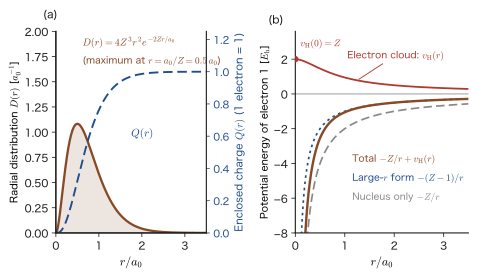
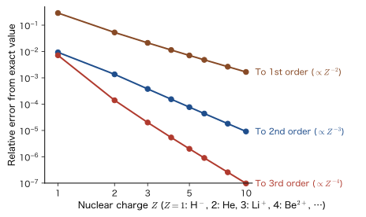
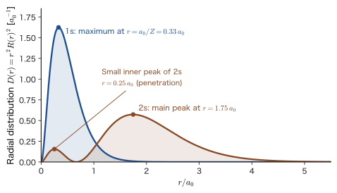
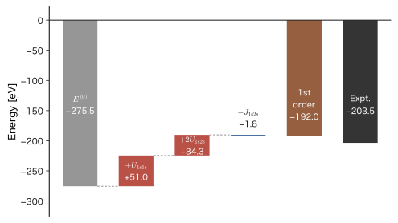

Chapter 29The Helium and Lithium Atoms by Perturbation Theory
The helium atom has two electrons, and because of the Coulomb repulsion between them its Schrödinger equation cannot be solved exactly. However, if we use perturbation theory, which adds the electron–electron repulsion as a small correction, we can estimate the ground-state energy $-79.0\ \mathrm{eV}$ as $-74.8\ \mathrm{eV}$ (an error of 5%) with nothing more than a first-order correction. This is the conclusion, and the method, that you will master in this chapter.
Because the hydrogen atom has only one electron, it can be solved exactly (Chapter 15), and its levels $E_n=-13.6\ \mathrm{eV}/n^2$ agreed perfectly with the experimental spectrum. But if we add one more electron, the electron–electron repulsion term ties together the coordinates of the two electrons, and a closed-form solution can no longer be written down. The situation is the same as for the three-body problem of the Sun, Earth, and Moon, which cannot be solved in closed form. Almost all the atoms of the periodic table, and almost all molecules and solids, have two or more electrons, so how we get over this wall is the dividing line between quantum mechanics reaching real matter and not reaching it. This is the first full-scale application of the perturbation theory learned in the previous two chapters (Chapter 27, Chapter 28), and the idea is simple. If we regard the electron–electron repulsion as “nonexistent,” helium splits into two hydrogen-like atoms and can be solved exactly. On top of that solution, we add the electron–electron repulsion as a correction. The correction, which is a sixfold integral, reduces to a single integral when we use the shell theorem learned in AD 03 (the electric field outside a spherically symmetric charge distribution is the same as the field of a point charge at the center), and the answer turns out to be the surprisingly simple $\tfrac58Z\,E_{\mathrm h}$. Lithium has three electrons, but with the same method the number of electron pairs merely increases to three.
However, we must not trust the first-order perturbation result uncritically. The ionization energy of helium is estimated as $20.4\ \mathrm{eV}$, which deviates by as much as 17% from the experimental $24.59\ \mathrm{eV}$. For lithium, first-order perturbation even makes the incorrect prediction that “the Li atom is more unstable than Li$^+$ plus an electron.” The aim of the second half of this chapter is to check numerically how far the result remains good and where it starts to turn bad, and to understand the causes (the fact that the perturbation is not “small,” the fact that the electrons shield one another, and the Pauli exclusion principle and the exchange integral). The idea of shielding leads to the variational principle of Part VI (Chapter 30, Chapter 31), and the Pauli exclusion principle and the exchange integral lead to the many-electron systems of Part VII (Chapter 33, Chapter 35). The connection to materials is also deep. What travels back and forth between the electrodes of a lithium-ion battery is Li$^+$, from which the 2s electron of Li (first ionization energy $5.39\ \mathrm{eV}$) has come off, whereas the inner 1s electron, with a third ionization energy of $122\ \mathrm{eV}$, is bound an order of magnitude more deeply and takes no part at all in chemical reactions. We estimate the reason for this difference, using shielding, in Example 29.11.
- Splitting the Hamiltonian of the helium atom into the sum $\hat{H}_0$ of two hydrogen-like atoms and the electron–electron repulsion $\hat{V}$, and finding the unperturbed state $\phi_{1\mathrm{s}}(\bm{r}_1)\phi_{1\mathrm{s}}(\bm{r}_2)$ and its energy $E_0^{(0)}=2Z^2\varepsilon_{1\mathrm{s}}=-108.85\ \mathrm{eV}$
- Deriving the sixfold integral $\iint e^{-\alpha(r_1+r_2)}/\lvert\bm{r}_1-\bm{r}_2\rvert\,\dd v_1\dd v_2=20\pi^2/\alpha^5$ in two ways, by the Legendre expansion (in the angular integral only the $l=0$ term survives) and by the shell theorem, and obtaining $\langle V\rangle=\tfrac58Z\,E_{\mathrm h}$
- Comparing the first-order perturbation energy $E=(2Z^2-\tfrac54Z)\varepsilon_{1\mathrm{s}}=-74.83\ \mathrm{eV}$ with the experimental value $-79.005\ \mathrm{eV}$, and explaining how the error grows to 17% for the ionization energy. Estimating systematically the total energies of He-like ions (H$^-$, Li$^+$, Be$^{2+}$, …) by the $1/Z$ expansion
- The three-electron Hamiltonian of lithium, the estimates of the levels of the 1s and 2s orbitals (three electron pairs), and the derivation of $U_{\mathrm{2s2s}}=\tfrac{77}{512}Z\,E_{\mathrm h}$
- Calculating the first-order perturbation $E^{(1)}=U_{\mathrm{1s1s}}+2U_{\mathrm{1s2s}}-J_{\mathrm{1s2s}}$ for the $(1\mathrm{s})^2(2\mathrm{s})$ configuration, which obeys the Pauli exclusion principle, and explaining the meaning of the Coulomb integral $U_{ab}$ and the exchange integral $J_{ab}$
- Explaining how the 1s2s excited state of helium splits into a singlet and a triplet at $E^{(0)}+U\pm J$ (the origin of Hund's rules), and why the size of that splitting comes out about three times as large as the experimental one (shielding)
- Estimating the order-of-magnitude difference between the 2s electron of Li ($5.39\ \mathrm{eV}$) and the 1s electron ($122\ \mathrm{eV}$) by means of shielding (Slater's rules). Showing the limitations of first-order perturbation numerically, and bridging to the next step, which incorporates the effect of shielding (the variational method with the effective nuclear charge $Z'=Z-\tfrac{5}{16}$)
Source notes: Yasuhide Mochizuki, “Physics Notes: Quantum Mechanics 3,” pp. 27–28.
29.1 The Hamiltonian of the Helium Atom and the Choice of Perturbation
29.1.1 The Hamiltonian of the helium atom
The helium atom consists of a nucleus of charge $+Ze_0$ ($Z=2$) and two electrons. The elementary charge is $e_0=1.602\,176\,634\times10^{-19}\ \mathrm{C}$, and the charge of an electron is $-e_0$. The nucleus is much heavier than an electron (the mass of the helium nucleus is about 7300 times the electron mass), so here we regard the nucleus as being at rest at the origin, and we denote the position vectors of electron 1 and electron 2 measured from the origin by $\bm{r}_1$ and $\bm{r}_2$. The distance between the two electrons is $r_{12}=\lvert\bm{r}_1-\bm{r}_2\rvert$ (Figure 29.1). We ignore the small spin-dependent terms (the spin–orbit interaction, Chapter 26). The operator representing the total energy of the system is then the sum of the following five terms.
\begin{equation} \hat{H}=-\frac{\hbar^2}{2m_{\mathrm e}}\nabla_1^2-\frac{1}{4\pi\varepsilon_0}\frac{Ze_0^2}{r_1} -\frac{\hbar^2}{2m_{\mathrm e}}\nabla_2^2-\frac{1}{4\pi\varepsilon_0}\frac{Ze_0^2}{r_2} +\frac{1}{4\pi\varepsilon_0}\frac{e_0^2}{\lvert\bm{r}_1-\bm{r}_2\rvert} \label{eq:29-H} \end{equation}- First term $-\dfrac{\hbar^2}{2m_{\mathrm e}}\nabla_1^2$: the kinetic energy of electron 1. $\nabla_1^2=\dfrac{\partial^2}{\partial x_1^2}+\dfrac{\partial^2}{\partial y_1^2}+\dfrac{\partial^2}{\partial z_1^2}$ is the differentiation with respect to the coordinates $(x_1,y_1,z_1)$ of electron 1 only (the Laplace operator).
- Second term $-\dfrac{Ze_0^2}{4\pi\varepsilon_0r_1}$: the potential energy of the Coulomb attraction between electron 1 and the nucleus. $r_1=\lvert\bm{r}_1\rvert$ is the distance between electron 1 and the nucleus, and the term is negative because the force is attractive.
- Third and fourth terms: the same quantities for electron 2.
- Fifth term $+\dfrac{e_0^2}{4\pi\varepsilon_0\lvert\bm{r}_1-\bm{r}_2\rvert}$: the potential energy of the Coulomb repulsion between the electrons. It is positive because it is a repulsion between charges of the same sign.
Every term has the unit $\mathrm{J}$. For example, for the fifth term, $\dfrac{e_0^2}{4\pi\varepsilon_0}$ has the dimension of $\mathrm{J\,m}$, and dividing it by the distance $r_{12}$ gives an energy. Later in this chapter we also treat He-like ions (H$^-$: $Z=1$, Li$^+$: $Z=3$, Be$^{2+}$: $Z=4$, …), so we leave the nuclear charge $Z$ as a symbol. Setting $Z=2$ gives the helium atom.
The eigenvalue problem $\hat{H}\Psi=E\Psi$ of this Hamiltonian is a partial differential equation in the coordinates $(\bm{r}_1,\bm{r}_2)$ of the two electrons, that is, in six variables. If there were no electron–electron repulsion term (the fifth term), $\hat{H}$ would be the sum of a “term of the coordinates of electron 1 only” and a “term of the coordinates of electron 2 only,” and separation of variables would reduce it to the problems of two hydrogen-like atoms. This is not possible, because the fifth term depends on both $\bm{r}_1$ and $\bm{r}_2$ at the same time. This is the same difficulty as the three-body problem of classical mechanics, and the Schrödinger equation of the helium atom has no closed-form exact solution like that of the hydrogen atom.
Notation: $\hat{H}_0$ and $\hat{V}$, $a_0$ and $a_{\mathrm B}$
As noted in Chapter 27, this book writes the Hamiltonian of perturbation theory as $\hat{H}=\hat{H}_0+\lambda\hat{V}$. The quantities written $\hat{H}^{(0)}$ and $\hat{H}'$ ($\hat{H}^{\mathrm P}=\lambda\hat{H}'$) in the related simulators and the companion volume (AD 05) correspond to $\hat{H}_0$ and $\hat{V}$ ($\lambda\hat{V}$) of this book, respectively. Also, the simulators write the Bohr radius as $a_{\mathrm B}$, but it is the same quantity as $a_0=4\pi\varepsilon_0\hbar^2/(m_{\mathrm e}e_0^2)=0.529\,177\ \text{Å}$ of this book. States are written with lowercase letters, as 1s and 2s. The one-electron levels $\varepsilon_{1\mathrm{s}}$ and $\varepsilon_{2\mathrm{s}}$ are the values for the hydrogen atom ($Z=1$) ($\varepsilon_{1\mathrm{s}}=-13.606\ \mathrm{eV}$, $\varepsilon_{2\mathrm{s}}=\varepsilon_{1\mathrm{s}}/4$) and do not contain $Z$; the levels of a hydrogen-like atom of nuclear charge $Z$ are $Z^2\varepsilon_{1\mathrm{s}}$ and $Z^2\varepsilon_{2\mathrm{s}}$. Note also that these are different quantities from $\varepsilon_0$ (the vacuum permittivity).
29.1.2 Splitting into the unperturbed term and the perturbation term
We therefore split the Hamiltonian into a part that can be solved and a part that cannot. We regard the electron–electron repulsion term as the “perturbation” and take the remainder as the “unperturbed term.”
Definition 29.1: The unperturbed term and the perturbation term of the helium atom
We write Eq. \eqref{eq:29-H} as $\hat{H}=\hat{H}_0+\lambda\hat{V}$, where
\begin{equation} \hat{H}_0=\hat{h}(1)+\hat{h}(2),\qquad \hat{h}(i)=-\frac{\hbar^2}{2m_{\mathrm e}}\nabla_i^2-\frac{Ze_0^2}{4\pi\varepsilon_0r_i}\ \ (i=1,2) \label{eq:29-H0} \end{equation}is called the unperturbed term (also called the unperturbed Hamiltonian), and
\begin{equation} \hat{V}=\frac{1}{4\pi\varepsilon_0}\frac{e_0^2}{\lvert\bm{r}_1-\bm{r}_2\rvert} \label{eq:29-V} \end{equation}is called the perturbation term (the perturbation, that is, the electron–electron repulsion term). $\hat{h}(i)$ is the Hamiltonian of a hydrogen-like atom consisting of a nucleus of charge $Ze_0$ and just one electron, electron $i$. $\lambda$ is a parameter introduced for convenience to keep track of the “strength” of the perturbation, and at the end we set $\lambda=1$.
This way of splitting is not merely a collection of the “exactly solvable part”; it is also physically meaningful. The attraction of the nucleus, $Ze_0^2/(4\pi\varepsilon_0 r)$, grows stronger in proportion to the nuclear charge $Z$, but the magnitude of the electron–electron repulsion is independent of $Z$. Therefore, the larger $Z$ is for an atom (ion), the smaller a correction the electron–electron repulsion becomes relative to the attraction of the nucleus. We will check this expectation quantitatively in Section 29.3.
29.1.3 The unperturbed system allows separation of variables
We write the Schrödinger equation of the unperturbed system as $\hat{H}_0\Psi^{(0)}=E^{(0)}\Psi^{(0)}$. Its solution can be written as a product of solutions of one-electron equations.
Derivation: The eigenstates of $\hat{H}_0$ are products of orbitals
Using the solutions $\phi_a$ (eigenvalue $\varepsilon_a$) and $\phi_b$ (eigenvalue $\varepsilon_b$) of the one-electron equation $\hat{h}(i)\phi_a(\bm{r}_i)=\varepsilon_a\phi_a(\bm{r}_i)$, form the two-electron function
$$ \Psi^{(0)}(\bm{r}_1,\bm{r}_2)=\phi_a(\bm{r}_1)\,\phi_b(\bm{r}_2) $$and apply $\hat{H}_0=\hat{h}(1)+\hat{h}(2)$ to it. Since $\hat{h}(1)$ is an operator that differentiates only with respect to the coordinate $\bm{r}_1$ of electron 1, the function $\phi_b(\bm{r}_2)$, which depends on $\bm{r}_2$ only, can be taken outside as if it were a constant. Similarly, for $\hat{h}(2)$ the function $\phi_a(\bm{r}_1)$ is a constant. Therefore
$$ \hat{H}_0\Psi^{(0)}=\bigl[\hat{h}(1)\phi_a(\bm{r}_1)\bigr]\phi_b(\bm{r}_2)+\phi_a(\bm{r}_1)\bigl[\hat{h}(2)\phi_b(\bm{r}_2)\bigr] =\varepsilon_a\phi_a(\bm{r}_1)\phi_b(\bm{r}_2)+\varepsilon_b\phi_a(\bm{r}_1)\phi_b(\bm{r}_2)=(\varepsilon_a+\varepsilon_b)\,\Psi^{(0)} $$and so $\Psi^{(0)}=\phi_a(\bm{r}_1)\phi_b(\bm{r}_2)$ is an eigenfunction with eigenvalue $E^{(0)}=\varepsilon_a+\varepsilon_b$.
∎
In particular, if we consider the state in which the two electrons are in the same orbital $\phi_n$, then in the notation of the general theory (Chapter 27) it can be written as follows.
\begin{equation} \hat{H}_0\Psi_n^{(0)}=E_n^{(0)}\Psi_n^{(0)},\qquad \Psi_n^{(0)}(\bm{r}_1,\bm{r}_2)=\phi_n(\bm{r}_1)\,\phi_n(\bm{r}_2),\qquad E_n^{(0)}=\varepsilon_{n,1}+\varepsilon_{n,2} \label{eq:29-sep} \end{equation}Here $\varepsilon_{n,1}$ and $\varepsilon_{n,2}$ are the one-electron energies of electron 1 and electron 2 (they are equal because the orbital is the same). The product form expresses that “the two electrons move independently of each other.” In terms of probability, $\lvert\Psi^{(0)}\rvert^2=\lvert\phi(\bm{r}_1)\rvert^2\lvert\phi(\bm{r}_2)\rvert^2$, just as the probability of independent events is a product. The electron–electron repulsion $\hat{V}$ is precisely the term that destroys this “independence” (since the electrons avoid each other, a correlation arises between their positions).
29.1.4 The 1s orbital of a hydrogen-like atom and the unperturbed energy
In the ground state of the helium atom, it is natural to consider that the electrons are in the 1s orbital, the lowest of the one-electron levels. We therefore use, as the 1s orbital of $\hat{h}$, the solution for the 1s state of a hydrogen-like atom of nuclear charge $Z$ (Chapter 16, Section 16.2; Chapter 18, Section 18.1).
\begin{equation} \phi_{1\mathrm{s}}(\bm{r})=\frac{1}{\sqrt{\pi}}\left(\frac{Z}{a_0}\right)^{3/2}e^{-Zr/a_0},\qquad -\frac{m_{\mathrm e}e_0^4}{8\varepsilon_0^2h^2}\,\frac{Z^2}{1^2}=Z^2\varepsilon_{1\mathrm{s}}\ \ (\text{the one-electron level of this orbital}) \label{eq:29-phi1s} \end{equation}Here we define the 1s level $\varepsilon_{1\mathrm{s}}$ of the hydrogen atom ($Z=1$) (it does not contain $Z$, and it is a quantity distinct from the vacuum permittivity $\varepsilon_0$) as
\begin{equation} \varepsilon_{1\mathrm{s}}\equiv-\frac{m_{\mathrm e}e_0^4}{8\varepsilon_0^2h^2}=-\frac{m_{\mathrm e}e_0^4}{2(4\pi\varepsilon_0)^2\hbar^2}=-\frac{e_0^2}{8\pi\varepsilon_0a_0}=-\frac{E_{\mathrm h}}{2}=-13.606\ \mathrm{eV} \label{eq:29-eps1s} \end{equation}(The $h$ form and the $\hbar$ form are related by $h=2\pi\hbar$. The third equality follows from $a_0=4\pi\varepsilon_0\hbar^2/(m_{\mathrm e}e_0^2)$. $E_{\mathrm h}=e_0^2/(4\pi\varepsilon_0a_0)=27.211\ \mathrm{eV}$ is the Hartree energy, Chapter 15, Section 15.6.) That $\phi_{1\mathrm{s}}$ is normalized can be checked as follows, using $\int_0^\infty r^ne^{-\beta r}\dd r=n!/\beta^{n+1}$ (University Mathematics, Chapter 32, Section 32.2):
$$ \int\lvert\phi_{1\mathrm{s}}\rvert^2\dd v=\frac{1}{\pi}\frac{Z^3}{a_0^3}\cdot4\pi\int_0^\infty r^2e^{-2Zr/a_0}\dd r=\frac{4Z^3}{a_0^3}\cdot\frac{2!}{(2Z/a_0)^3}=\frac{4Z^3}{a_0^3}\cdot\frac{2a_0^3}{8Z^3}=1 $$(The angular part gives $4\pi$ over the total solid angle.) Substituting into Eq. \eqref{eq:29-sep}, we obtain the unperturbed state in which both electrons are in the 1s orbital, as follows.
Formula 29.1: Unperturbed ground state of helium-like atoms
\begin{equation} \Psi_0^{(0)}(\bm{r}_1,\bm{r}_2)=\phi_{1\mathrm{s}}(\bm{r}_1)\phi_{1\mathrm{s}}(\bm{r}_2)=\frac{1}{\pi}\left(\frac{Z}{a_0}\right)^3e^{-Z(r_1+r_2)/a_0},\qquad E_0^{(0)}=2Z^2\,\varepsilon_{1\mathrm{s}} \label{eq:29-Psi0} \end{equation}Here we wrote the subscript as $0$ because, in the numbering of the general theory (Chapter 27), the ground state is $n=0$ (the states of a hydrogen-like atom are written 1s, 2s, … with the principal quantum number $n=1,2,\dots$). For $Z=2$, $E_0^{(0)}=8\varepsilon_{1\mathrm{s}}=8\times(-13.606\ \mathrm{eV})=-108.848\ \mathrm{eV}$ ($=-4E_{\mathrm h}=-108.846\ \mathrm{eV}$).
The difference between this value and the experimentally measured energy of the ground state of the helium atom ($-79.005\ \mathrm{eV}$, Section 29.3) is about $30\ \mathrm{eV}$, and this gap should be filled by “the effect of the electron–electron repulsion.”
Example 29.1: Ionization energy of helium when the electron–electron repulsion is neglected
If the electron–electron repulsion is neglected, what is the first ionization energy of the helium atom (the energy required to remove one electron)? Compare it with the experimental value $24.587\ \mathrm{eV}$ and explain the meaning of the difference.
Solution. He$^+$, from which one electron has been removed, is a one-electron hydrogen-like ion ($Z=2$), so its energy is $E(\mathrm{He}^+)=4\varepsilon_{1\mathrm{s}}=4\times(-13.606)=-54.424\ \mathrm{eV}$, obtained by setting $Z=2$ in $\varepsilon$ of Eq. \eqref{eq:29-phi1s}. Since the unperturbed helium atom has $E_0^{(0)}=-108.848\ \mathrm{eV}$,
$$ \mathrm{IP}^{(0)}=E(\mathrm{He}^+)-E_0^{(0)}=-54.424-(-108.848)=54.424\ \mathrm{eV} $$(since the two electrons are in the same level, removing either one costs $54.424\ \mathrm{eV}$). This is about 2.2 times the experimental value $24.587\ \mathrm{eV}$. The difference is $54.424-24.587=29.8\ \mathrm{eV}$; since the electron–electron repulsion that the remaining electron had been experiencing vanishes when one electron is removed, this difference corresponds to the amount by which the removal becomes easier. It is of nearly the same magnitude as the electron–electron repulsion (the $\langle\hat{V}\rangle=34.0\ \mathrm{eV}$ calculated in Section 29.2), which shows that there is nothing unreasonable about the approach of adding the effect of the electron–electron repulsion as a perturbation.
Example 29.2: Rewriting the Hamiltonian in units of $a_0$ and $E_{\mathrm h}$
Rewrite Eq. \eqref{eq:29-H} with lengths measured in units of $a_0$ and energies in units of $E_{\mathrm h}$, and estimate the typical magnitudes of the length and the energy for $Z=2$.
Solution. Let $r_i=a_0s_i$ ($s_i$ is a dimensionless length). Then $\nabla_i^2=a_0^{-2}\nabla_{s_i}^2$. Since $E_{\mathrm h}=\hbar^2/(m_{\mathrm e}a_0^2)=e_0^2/(4\pi\varepsilon_0a_0)$, the kinetic-energy term is $-\dfrac{\hbar^2}{2m_{\mathrm e}}\nabla_i^2=E_{\mathrm h}\Bigl(-\dfrac12\nabla_{s_i}^2\Bigr)$, the Coulomb term is $\dfrac{Ze_0^2}{4\pi\varepsilon_0r_i}=\dfrac{Ze_0^2}{4\pi\varepsilon_0a_0s_i}=E_{\mathrm h}\dfrac{Z}{s_i}$, and the electron–electron repulsion is $\dfrac{e_0^2}{4\pi\varepsilon_0r_{12}}=E_{\mathrm h}\dfrac{1}{s_{12}}$. Therefore
$$ \frac{\hat{H}}{E_{\mathrm h}}=-\frac12\bigl(\nabla_{s_1}^2+\nabla_{s_2}^2\bigr)-Z\left(\frac{1}{s_1}+\frac{1}{s_2}\right)+\frac{1}{s_{12}} $$(hereafter, the form in which $s$ is simply written as $r$ is often used in atomic calculations; it is formally introduced as atomic units in Chapter 33). Now let us estimate the magnitudes. The most probable radius of the 1s orbital for $Z=2$ is $a_0/Z=0.529\,177\ \text{Å}/2=0.265\ \text{Å}$. The kinetic energy of one electron is $Z^2/2=2$, and the attraction to the nucleus is of the order of $-Z/s\sim-Z^2=-4$ (in units of $E_{\mathrm h}$, with $s\sim1/Z$); if the distance between the two electrons is about $s_{12}\sim1$, the electron–electron repulsion is of the order of $1/s_{12}\sim1$. While the sum of the attraction and the kinetic energy of the two electrons is several $E_{\mathrm h}$ (tens of eV), the electron–electron repulsion is about $1\,E_{\mathrm h}$ ($27\ \mathrm{eV}$); thus it cannot be called a small correction, but it is not the dominant term either.
29.1.5 Spin and the Pauli exclusion principle
The Hamiltonian of Eq. \eqref{eq:29-H} does not contain the spin, but the electrons are indistinguishable spin-$\tfrac12$ fermions (Chapter 23, Section 23.4). Under the exchange of the two electrons ($1\leftrightarrow2$), the total wave function (spatial part × spin part) must be antisymmetric. In the ground state both electrons are in the 1s orbital, and the spatial part $\phi_{1\mathrm{s}}(\bm{r}_1)\phi_{1\mathrm{s}}(\bm{r}_2)$ is symmetric under the exchange, so the spin part can only be the antisymmetric singlet
$$ \frac{1}{\sqrt2}\bigl[\alpha(1)\beta(2)-\beta(1)\alpha(2)\bigr]\qquad(S=0) $$(here $\alpha=\ket{\uparrow}$, $\beta=\ket{\downarrow}$; Chapter 25, Section 25.8). In other words, the ground state of helium is a $^1$S state in which the two electrons occupy the 1s orbital with opposite spins. Since neither $\hat{H}_0$ nor $\hat{V}$ acts on the spin, and the spin function is normalized ($\langle\text{spin}\lvert\text{spin}\rangle=1$), in the energy calculations below we need to consider only the spatial part. Moreover, since the ground state $(1\mathrm{s})^2$ has no other state with the same unperturbed energy $E_0^{(0)}$, nondegenerate perturbation theory (Chapter 27) can be used as it stands. On the other hand, for excited states and for Li, the orientation of the spins affects the expectation value of $\hat{V}$ (Section 29.5).
29.2 Actually Computing the Electron–Electron Repulsion Integral $\langle 1/r_{12}\rangle$
29.2.1 The first-order perturbation energy and the sixfold integral
As we learned in Chapter 27, the first-order perturbation energy is the expectation value of the perturbation $\hat{V}$ taken in the unperturbed state: $E=E_0^{(0)}+\lambda E^{(1)}+\cdots$, $E^{(1)}=\mel{\Psi_0^{(0)}}{\hat{V}}{\Psi_0^{(0)}}$. Setting $\lambda=1$, we have
\begin{equation} E\simeq E_0^{(0)}+\mel{\Psi_0^{(0)}}{\hat{V}}{\Psi_0^{(0)}} =E_0^{(0)}+\iint\lvert\Psi_0^{(0)}(\bm{r}_1,\bm{r}_2)\rvert^2\,\frac{e_0^2}{4\pi\varepsilon_0\lvert\bm{r}_1-\bm{r}_2\rvert}\,\dd v_1\dd v_2 \label{eq:29-E1def} \end{equation}where $\dd v_i$ is the volume element of electron $i$. In polar coordinates $(r,\theta,\varphi)$ ($\theta$ is the angle from the $z$ axis and $\varphi$ is the azimuthal angle), $\dd v=r^2\sin\theta\,\dd r\,\dd\theta\,\dd\varphi$ (University Mathematics, Chapter 7, Section 7.3), so the ranges of integration are $0\le r\lt\infty$, $0\le\theta\le\pi$, $0\le\varphi\le2\pi$. Taken over both electrons together, this is a sixfold integral.
Let us check the coefficient of the integrand. From Eq. \eqref{eq:29-Psi0}, $\lvert\Psi_0^{(0)}\rvert^2=\dfrac{1}{\pi^2}\Bigl(\dfrac{Z}{a_0}\Bigr)^6e^{-\frac{2Z}{a_0}(r_1+r_2)}$. Multiplying this by $\dfrac{e_0^2}{4\pi\varepsilon_0}$ gives $\dfrac{1}{\pi^2}\cdot\dfrac{e_0^2}{4\pi\varepsilon_0}=\dfrac{e_0^2}{4\pi^3\varepsilon_0}$. Thus the total energy can be written as follows.
\begin{equation} \begin{aligned} E&=2Z^2\varepsilon_{1\mathrm{s}}+\int_0^{2\pi}\!\!\int_0^{\pi}\!\!\int_0^{\infty}r_1^2\sin\theta_1\,\dd r_1\dd\theta_1\dd\varphi_1\int_0^{2\pi}\!\!\int_0^{\pi}\!\!\int_0^{\infty}r_2^2\sin\theta_2\,\dd r_2\dd\theta_2\dd\varphi_2\\ &\qquad\qquad\times\frac{e_0^2}{4\pi^3\varepsilon_0}\left(\frac{Z}{a_0}\right)^6\frac{e^{-\frac{2Z}{a_0}(r_1+r_2)}}{\lvert\bm{r}_1-\bm{r}_2\rvert} \end{aligned} \label{eq:29-6int} \end{equation}The exponential part is simple, being a function of $r_1$ and $r_2$ only, but $\lvert\bm{r}_1-\bm{r}_2\rvert=\sqrt{r_1^2+r_2^2-2r_1r_2\cos\gamma}$ depends on all four angular variables through the angle $\gamma$ between the directions of the two electrons ($\cos\gamma=\cos\theta_1\cos\theta_2+\sin\theta_1\sin\theta_2\cos(\varphi_1-\varphi_2)$). As it stands, this is beyond our ability to handle.
29.2.2 The integral formula and the first-order energy
We therefore use the following formula. We give two proofs of it, by two different methods, in the next two subsections (29.2.3 and 29.2.4).
Formula 29.2: The sixfold integral for the electron–electron repulsion
For $\alpha\gt0$,
\begin{equation} \iint\dd v_1\dd v_2\,\frac{e^{-\alpha(r_1+r_2)}}{\lvert\bm{r}_1-\bm{r}_2\rvert}=\frac{20\pi^2}{\alpha^5} \label{eq:29-20pi} \end{equation}(the integral is over all of space, and $\dd v_1$ and $\dd v_2$ are three-dimensional volume elements). Here $\alpha$ is the coefficient in the exponential function (the reciprocal of a length), and it is a quantity distinct from the spin function $\alpha$ ($=\ket{\uparrow}$) and from the fine-structure constant.
Let us check the dimensions. The left-hand side is volume $\times$ volume $\times$ length$^{-1}$, that is, length to the fifth power, and the right-hand side is $\alpha$ (length$^{-1}$) to the power $-5$, which is indeed length to the fifth power. Substituting $\alpha=2Z/a_0$ into Formula \eqref{eq:29-20pi}, the integral in Eq. \eqref{eq:29-6int} becomes
\begin{equation} \begin{aligned} \mel{\Psi_0^{(0)}}{\hat{V}}{\Psi_0^{(0)}}&=\frac{e_0^2}{4\pi^3\varepsilon_0}\left(\frac{Z}{a_0}\right)^6\cdot20\pi^2\cdot\left(\frac{a_0}{2Z}\right)^5 =\frac{e_0^2}{4\pi^3\varepsilon_0}\cdot\frac{Z^6}{a_0^6}\cdot20\pi^2\cdot\frac{a_0^5}{32Z^5}\\ &=\frac{20\pi^2}{4\cdot32\,\pi^3}\cdot\frac{e_0^2Z}{\varepsilon_0a_0}=\frac{5e_0^2Z}{32\pi\varepsilon_0a_0} \end{aligned} \label{eq:29-E1val} \end{equation}where we used $\pi^2/\pi^3=1/\pi$ and $20/128=5/32$. Using $\varepsilon_{1\mathrm{s}}=-e_0^2/(8\pi\varepsilon_0a_0)$ (Eq. \eqref{eq:29-eps1s}), we have $\dfrac{e_0^2}{\pi\varepsilon_0a_0}=-8\varepsilon_{1\mathrm{s}}$, so this quantity equals $\dfrac{5Z}{32}\times(-8\varepsilon_{1\mathrm{s}})=-\dfrac54Z\,\varepsilon_{1\mathrm{s}}$. Also, since $\dfrac{5}{32\pi}=\dfrac58\cdot\dfrac{1}{4\pi}$, using $E_{\mathrm h}=e_0^2/(4\pi\varepsilon_0a_0)$ it can be written as $\dfrac58Z\,E_{\mathrm h}$. In summary, we have the following.
Formula 29.3: Expectation value of the electron–electron repulsion (first-order perturbation energy)
\begin{equation} E^{(1)}=\mel{\Psi_0^{(0)}}{\hat{V}}{\Psi_0^{(0)}}=\frac{5e_0^2Z}{32\pi\varepsilon_0a_0}=-\frac54Z\,\varepsilon_{1\mathrm{s}}=\frac58Z\,E_{\mathrm h} \label{eq:29-E1} \end{equation}For $Z=2$, $E^{(1)}=\tfrac54E_{\mathrm h}=1.25\times27.211\ \mathrm{eV}=34.01\ \mathrm{eV}$. The dimension is that of $e_0^2/(\varepsilon_0a_0)$, that is, ($\mathrm{C^2}/(\mathrm{F/m}\cdot\mathrm{m})$) $=\mathrm{C^2/F}=\mathrm{J}$, which is an energy.
At this point, the answer for the first-order perturbation depends only on whether Formula \eqref{eq:29-20pi} holds. In 29.2.3 and 29.2.4 we derive this formula without skipping any steps.
29.2.3 Derivation 1: Doing the angular integral first (Legendre expansion)
The only source of difficulty in the integral is the angular dependence of $1/\lvert\bm{r}_1-\bm{r}_2\rvert$. We therefore expand this quantity in a series according to the relative sizes of $r_1$ and $r_2$, so that the angular integral becomes simple. Below, of the two electrons' distances from the nucleus, we write $r_{\lt}=\min(r_1,r_2)$ for the smaller and $r_{\gt}=\max(r_1,r_2)$ for the larger.
Math Tool: The generating function of the Legendre polynomials
The Legendre polynomial $P_l(u)$ (University Mathematics, Chapter 40, Section 40.4) appears as the coefficient in the following expansion, which holds for $\lvert t\rvert\lt1$, $\lvert u\rvert\le1$.
\begin{equation} \frac{1}{\sqrt{1-2ut+t^2}}=\sum_{l=0}^{\infty}P_l(u)\,t^l \label{eq:29-gen} \end{equation}Let us check that, writing the left-hand side as $g(u,t)$, the coefficients in the expansion in $t$ are $P_l(u)$. Differentiating with respect to $t$ gives $\dfrac{\partial g}{\partial t}=(u-t)(1-2ut+t^2)^{-3/2}$, that is, $(1-2ut+t^2)\dfrac{\partial g}{\partial t}=(u-t)\,g$. Setting $g=\sum_lc_l(u)t^l$ and substituting it into this relation, we compare the coefficients of $t^l$ on both sides and obtain the following recurrence relation
$$ (l+1)c_{l+1}-2u\,l\,c_l+(l-1)c_{l-1}=u\,c_l-c_{l-1}\quad\Longrightarrow\quad(l+1)c_{l+1}=(2l+1)\,u\,c_l-l\,c_{l-1} $$Also, $g=1$ at $t=0$, and the coefficient of the linear term in $t$ is $u$, obtained by substituting $x=-2ut+t^2$ into $(1+x)^{-1/2}=1-\tfrac12x+\cdots$, so $c_0=1$ and $c_1=u$. The Legendre polynomials $P_l$, defined by Rodrigues' formula (Chapter 40, Section 40.5), satisfy the same recurrence relation with $P_0=1$ and $P_1=u$, so $c_l=P_l$. For low orders, $P_0=1$, $P_1=u$, $P_2=\tfrac12(3u^2-1)$, and $P_3=\tfrac12(5u^3-3u)$.
Derivation: Formula 29.2 (by expanding $1/r_{12}$)
[i] Expansion of $1/r_{12}$. Let $\gamma$ be the angle between the position vectors of electrons 1 and 2. By the law of cosines, $\lvert\bm{r}_1-\bm{r}_2\rvert^2=r_1^2+r_2^2-2r_1r_2\cos\gamma$. Factoring $r_{\gt}^2$ out of the right-hand side and letting $t=r_{\lt}/r_{\gt}$ ($0\le t\le1$) and $u=\cos\gamma$, we obtain $\lvert\bm{r}_1-\bm{r}_2\rvert=r_{\gt}\sqrt{1-2ut+t^2}$. Hence, by Eq. \eqref{eq:29-gen},
\begin{equation} \frac{1}{\lvert\bm{r}_1-\bm{r}_2\rvert}=\frac{1}{r_{\gt}}\sum_{l=0}^{\infty}\left(\frac{r_{\lt}}{r_{\gt}}\right)^lP_l(\cos\gamma)=\sum_{l=0}^{\infty}\frac{r_{\lt}^{\,l}}{r_{\gt}^{\,l+1}}\,P_l(\cos\gamma) \label{eq:29-legendre} \end{equation}holds.
[ii] Angular integral. Of the integrand, the factor $e^{-\alpha(r_1+r_2)}$ other than $1/r_{12}$ is a function of $r_1,r_2$ only and does not depend on the angles. Therefore, writing $\dd v_i=r_i^2\dd r_i\dd\Omega_i$ ($\dd\Omega=\sin\theta\,\dd\theta\,\dd\varphi$ is the solid-angle element, and the total solid angle is $\int\dd\Omega=4\pi$), the left-hand side of Formula \eqref{eq:29-20pi} becomes
$$ \iint\dd v_1\dd v_2\,\frac{e^{-\alpha(r_1+r_2)}}{r_{12}}=\int_0^\infty\!\!\int_0^\infty r_1^2r_2^2\,e^{-\alpha(r_1+r_2)}\left[\sum_{l=0}^\infty\frac{r_{\lt}^{\,l}}{r_{\gt}^{\,l+1}}\iint P_l(\cos\gamma)\,\dd\Omega_1\dd\Omega_2\right]\dd r_1\dd r_2 $$We now compute the angular integral $\iint P_l(\cos\gamma)\dd\Omega_1\dd\Omega_2$. Fix the direction $\Omega_1$ of electron 1 and integrate over the direction $\Omega_2$ of electron 2. We may take the axis of the polar coordinates (the axis from which $\theta$ is measured) along the direction of $\bm{r}_1$ (the integral does not depend on how the coordinate axes are chosen). Then $\gamma$ is exactly the polar angle of electron 2, so we have
$$ \int P_l(\cos\gamma)\dd\Omega_2=\int_0^{2\pi}\!\dd\varphi\int_0^\pi P_l(\cos\theta)\sin\theta\,\dd\theta=2\pi\int_{-1}^{1}P_l(u)\,\dd u=4\pi\,\delta_{l0} $$The last equality follows from the orthogonality to $P_0=1$, $\int_{-1}^1P_lP_0\dd u=\dfrac{2}{2l+1}\delta_{l0}$ (Chapter 40, Section 40.5). For example, for $l=1$ we have $\int u\,\dd u=0$, and for $l=2$ we have $\int\tfrac12(3u^2-1)\dd u=\tfrac12(2-2)=0$. Since this result does not depend on $\Omega_1$, the subsequent integral over $\Omega_1$ just multiplies by $4\pi$: $\iint P_l(\cos\gamma)\dd\Omega_1\dd\Omega_2=16\pi^2\delta_{l0}$. All the terms with $l\ge1$ vanish, and only the $l=0$ term, $1/r_{\gt}$, remains.
[iii] Radial integral. Therefore, we have
$$ \iint\dd v_1\dd v_2\,\frac{e^{-\alpha(r_1+r_2)}}{r_{12}}=16\pi^2\int_0^\infty\!\!\int_0^\infty\frac{r_1^2r_2^2}{r_{\gt}}\,e^{-\alpha(r_1+r_2)}\dd r_1\dd r_2 $$Split the region of integration into two along the diagonal $r_1=r_2$ (Figure 29.2(a)). Since the integrand is invariant under the exchange $r_1\leftrightarrow r_2$, the two regions contribute equally. In the region $r_1\lt r_2$ we have $r_{\gt}=r_2$, so
\begin{equation} \iint\dd v_1\dd v_2\,\frac{e^{-\alpha(r_1+r_2)}}{r_{12}}=2\times16\pi^2\int_0^\infty\dd r_2\,r_2\,e^{-\alpha r_2}\int_0^{r_2}r_1^2\,e^{-\alpha r_1}\dd r_1\equiv32\pi^2\,I \label{eq:29-Idef} \end{equation}This defines the last expression (we used $r_2^2/r_{\gt}=r_2$). Integrating by parts twice, the inner integral $\int_0^{r_2}r_1^2e^{-\alpha r_1}\dd r_1$ becomes
$$ \int_0^{r_2}r_1^2e^{-\alpha r_1}\dd r_1=\frac{2}{\alpha^3}-e^{-\alpha r_2}\left(\frac{r_2^2}{\alpha}+\frac{2r_2}{\alpha^2}+\frac{2}{\alpha^3}\right) $$(Indeed, differentiating the right-hand side with respect to $r_2$ gives $e^{-\alpha r_2}\bigl[r_2^2+\tfrac{2r_2}{\alpha}+\tfrac{2}{\alpha^2}-\tfrac{2r_2}{\alpha}-\tfrac{2}{\alpha^2}\bigr]=r_2^2e^{-\alpha r_2}$, and the right-hand side is 0 at $r_2=0$, so it is correct.) Substituting this into the outer integral of Eq. \eqref{eq:29-Idef} and using $\int_0^\infty r^ne^{-\beta r}\dd r=n!/\beta^{n+1}$, we obtain
$$ \begin{aligned} I&=\frac{2}{\alpha^3}\int_0^\infty r_2e^{-\alpha r_2}\dd r_2-\int_0^\infty e^{-2\alpha r_2}\left(\frac{r_2^3}{\alpha}+\frac{2r_2^2}{\alpha^2}+\frac{2r_2}{\alpha^3}\right)\dd r_2\\ &=\frac{2}{\alpha^3}\cdot\frac{1}{\alpha^2}-\left[\frac{1}{\alpha}\cdot\frac{3!}{(2\alpha)^4}+\frac{2}{\alpha^2}\cdot\frac{2!}{(2\alpha)^3}+\frac{2}{\alpha^3}\cdot\frac{1!}{(2\alpha)^2}\right]\\ &=\frac{2}{\alpha^5}-\left[\frac{3}{8\alpha^5}+\frac{1}{2\alpha^5}+\frac{1}{2\alpha^5}\right]=\frac{1}{\alpha^5}\left(2-\frac{11}{8}\right)=\frac{5}{8\alpha^5} \end{aligned} $$Hence $32\pi^2I=32\pi^2\cdot\dfrac{5}{8\alpha^5}=\dfrac{20\pi^2}{\alpha^5}$, and Formula \eqref{eq:29-20pi} is proved.
∎
Check: The angular average is $1/r_{\gt}$
The conclusion that only the $l=0$ term survives can also be confirmed by direct integration. Integrating over $\gamma$ with $\dd\Omega=2\pi\,\dd u$ ($u=\cos\gamma$), the angular average is
$$ \frac12\int_{-1}^{1}\frac{\dd u}{\sqrt{r_1^2+r_2^2-2r_1r_2u}}=\frac12\cdot\frac{-1}{r_1r_2}\Bigl[\sqrt{r_1^2+r_2^2-2r_1r_2u}\Bigr]_{u=-1}^{u=1}=\frac{(r_1+r_2)-\lvert r_1-r_2\rvert}{2r_1r_2}=\frac{2r_{\lt}}{2r_{\lt}r_{\gt}}=\frac{1}{r_{\gt}} $$(Note that the square roots at $u=\pm1$ are $\lvert r_1\mp r_2\rvert$, and that $\sqrt{(r_1-r_2)^2}=\lvert r_1-r_2\rvert$. Also, $r_1r_2=r_{\lt}r_{\gt}$.) In the words of Figure 29.2(b): “when electron 2 moves around uniformly on a sphere of radius $r_{\gt}$, the average of the repulsive potential energy with the inner electron is $1/r_{\gt}$, the same as when all the charge is at the center.” This is the shell theorem itself.
Incidentally, the terms with $l\ge1$ (the dipole, quadrupole, … terms of the multipole expansion) all vanished for the spherically symmetric 1s state. In the electron–electron repulsion of many-electron atoms containing p and d orbitals (Chapter 34) and of ligand fields (Part VIII), however, the terms with $l=2,4,\dots$ remain and give rise to the Racah parameters ($F^k$, $B$, $C$).
29.2.4 Derivation 2: Using the shell theorem (Gauss's law)
Formula \eqref{eq:29-20pi} can also be read in the language of electrostatics. We regard electron 2 as forming a cloud spread spherically symmetrically around the nucleus; we first find the “potential of the cloud” felt by electron 1, and then integrate over the distribution of electron 1.
Law 29.1: The shell theorem (the potential produced by a spherically symmetric charge distribution)
When a charge $\dd q$ is uniformly distributed on a thin spherical shell of radius $r'$ centered at the origin, the potential at a point at distance $r$ from the origin is, for $r\gt r'$ (outside the shell), equal to $\dfrac{\dd q}{4\pi\varepsilon_0r}$, the value obtained by regarding all the charge of the shell as a point charge at the origin, and for $r\lt r'$ (inside the shell) it is the constant value $\dfrac{\dd q}{4\pi\varepsilon_0r'}$, independent of position. Together, these can be written as $\dfrac{\dd q}{4\pi\varepsilon_0\,r_{\gt}}$ ($r_{\gt}=\max(r,r')$). (AD 03, Chapter 36, Section 36.5 (in Japanese), Chapter 8, Section 8.5. It follows from Gauss's law, Chapter 35, Section 35.3 (in Japanese).)
Derivation: Law 29.1 (from Gauss's law)
If a charge $\dd q$ is uniformly distributed on a spherical shell of radius $r'$, then by symmetry the electric field is radial about the origin, and its magnitude is determined solely by the distance $r$ from the origin. Applying Gauss's law to a sphere of radius $r$ gives $4\pi r^2E(r)=Q_{\text{enc}}/\varepsilon_0$ ($Q_{\text{enc}}$ is the charge inside the sphere), so $E(r)=Q_{\text{enc}}/(4\pi\varepsilon_0r^2)$. Outside the shell ($r\gt r'$) we have $Q_{\text{enc}}=\dd q$, and both the electric field and the potential $\dd q/(4\pi\varepsilon_0r)$ referenced to infinity are the same as those of a point charge. Inside the shell ($r\lt r'$) there is no charge inside the sphere, so $Q_{\text{enc}}=0$ and therefore $E=0$, and the potential is constant, independent of position. Since the potential is continuous at the surface of the shell ($r=r'$), this constant equals $\dd q/(4\pi\varepsilon_0r')$, obtained by putting $r=r'$ in the expression for the outside.
∎
This has the same content as the angular average $1/r_{\gt}$ in the previous subsection. A cloud of spherically symmetric density $\rho(r')$ is a superposition of thin spherical shells, so replacing $\dd q\to4\pi r'^2\rho(r')\dd r'$ and integrating, we obtain the potential (more precisely, the quantity proportional to it)
\begin{equation} w(r)\equiv\int\frac{\rho(r')}{\lvert\bm{r}-\bm{r}'\rvert}\dd v'=\int_0^\infty\frac{4\pi r'^2\rho(r')}{r_{\gt}}\dd r'=\frac1r\int_0^r4\pi r'^2\rho(r')\dd r'+\int_r^\infty4\pi r'\rho(r')\dd r' \label{eq:29-shell} \end{equation}The first term is the contribution of the “charge inside radius $r$,” which acts like a point charge, and the second term is the contribution of the “charge outside,” which gives a constant potential.
Derivation: Formula 29.2 (via the shell theorem)
[i] The quantity $w(r)$ produced by the cloud of electron 2. Substitute $\rho(r')=e^{-\alpha r'}$ into Eq. \eqref{eq:29-shell}. By the same integration by parts as in Section 29.2.3, we have $\int_0^rr'^2e^{-\alpha r'}\dd r'=\dfrac{2}{\alpha^3}-e^{-\alpha r}\Bigl(\dfrac{r^2}{\alpha}+\dfrac{2r}{\alpha^2}+\dfrac{2}{\alpha^3}\Bigr)$ and $\int_r^\infty r'e^{-\alpha r'}\dd r'=e^{-\alpha r}\Bigl(\dfrac r\alpha+\dfrac1{\alpha^2}\Bigr)$. Therefore, we obtain
$$ \begin{aligned} w(r)&=4\pi\left\{\frac{1}{r}\left[\frac{2}{\alpha^3}-e^{-\alpha r}\Bigl(\frac{r^2}{\alpha}+\frac{2r}{\alpha^2}+\frac{2}{\alpha^3}\Bigr)\right]+e^{-\alpha r}\Bigl(\frac r\alpha+\frac1{\alpha^2}\Bigr)\right\}\\ &=4\pi\left\{\frac{2}{\alpha^3r}-e^{-\alpha r}\Bigl[\frac{r}{\alpha}+\frac{2}{\alpha^2}+\frac{2}{\alpha^3r}-\frac r\alpha-\frac{1}{\alpha^2}\Bigr]\right\} =\frac{8\pi}{\alpha^3r}\left[1-\Bigl(1+\frac{\alpha r}{2}\Bigr)e^{-\alpha r}\right] \end{aligned} $$This is the result.
[ii] Integrate over electron 1. The left-hand side of the formula is $\int\dd v_1\,e^{-\alpha r_1}\,w(r_1)=4\pi\int_0^\infty r^2e^{-\alpha r}\,w(r)\,\dd r$, so
$$ \begin{aligned} 4\pi\int_0^\infty r^2e^{-\alpha r}\frac{8\pi}{\alpha^3r}\left[1-\Bigl(1+\frac{\alpha r}{2}\Bigr)e^{-\alpha r}\right]\dd r &=\frac{32\pi^2}{\alpha^3}\left[\int_0^\infty re^{-\alpha r}\dd r-\int_0^\infty\Bigl(r+\frac{\alpha r^2}{2}\Bigr)e^{-2\alpha r}\dd r\right]\\ &=\frac{32\pi^2}{\alpha^3}\left[\frac{1}{\alpha^2}-\frac{1}{4\alpha^2}-\frac{\alpha}{2}\cdot\frac{2}{8\alpha^3}\right]=\frac{32\pi^2}{\alpha^3}\cdot\frac{1}{\alpha^2}\left(1-\frac14-\frac18\right)=\frac{20\pi^2}{\alpha^5} \end{aligned} $$and we obtain the same result as in Section 29.2.3.
∎
29.2.5 The potential of the electron cloud and shielding — the physical meaning of Derivation 2
The quantity $w(r)$ that appeared along the way in Derivation 2 is physically important. When electron 2 forms a 1s-orbital electron cloud (with charge density $-e_0\lvert\phi_{1\mathrm{s}}\rvert^2$), the potential energy of electron 1 due to the Coulomb repulsion with this cloud is, from Eq. \eqref{eq:29-shell} with $\rho=\lvert\phi_{1\mathrm{s}}\rvert^2=\dfrac{Z^3}{\pi a_0^3}e^{-2Zr/a_0}$ (corresponding to $\alpha=2Z/a_0$),
\begin{equation} v_{\mathrm H}(r)=\frac{e_0^2}{4\pi\varepsilon_0}\int\frac{\lvert\phi_{1\mathrm{s}}(\bm{r}')\rvert^2}{\lvert\bm{r}-\bm{r}'\rvert}\dd v'=\frac{e_0^2}{4\pi\varepsilon_0\,r}\left[1-\Bigl(1+\frac{Zr}{a_0}\Bigr)e^{-2Zr/a_0}\right]=E_{\mathrm h}\,\frac{a_0}{r}\left[1-\Bigl(1+\frac{Zr}{a_0}\Bigr)e^{-2Zr/a_0}\right] \label{eq:29-vH} \end{equation}Here, substituting $\alpha=2Z/a_0$ into the previous result for $w$ gives $\dfrac{Z^3}{\pi a_0^3}\cdot\dfrac{8\pi}{\alpha^3}=\dfrac{Z^3}{\pi a_0^3}\cdot\dfrac{\pi a_0^3}{Z^3}=1$, so the coefficient becomes 1. The subscript H comes from the idea introduced by Hartree of “the potential produced by the average charge of the other electrons” (Chapter 36). This potential is shown in Figure 29.3.

Let us look at two limits.
- $r\to0$ (electron 1 very close to the nucleus): Expanding $1-(1+Zr/a_0)e^{-2Zr/a_0}$ in $x=Zr/a_0$, from $e^{-2x}=1-2x+2x^2-\cdots$ we get $(1+x)e^{-2x}=1-x+0\cdot x^2+\cdots$, so the quantity in the brackets is $x+O(x^3)$, and $v_{\mathrm H}(0)=E_{\mathrm h}Z$. At the center of the electron cloud the potential is constant (no force is felt), and while the nuclear attraction $-Z/r$ diverges, the repulsion due to the electron cloud remains finite.
- $r\to\infty$ (electron 1 far away): The exponential term vanishes and $v_{\mathrm H}\to e_0^2/(4\pi\varepsilon_0r)$. Since all the charge of electron 2 appears to be a point charge at the center, the attraction felt by electron 1 decreases to $Z-1$, the nuclear $Z$ minus one electron's worth.
In other words, the effective nuclear charge felt by electron 1 is $Z$ close to the nucleus and $Z-1$ far away, and it changes continuously between the two. This effect, in which the other electrons “hide” the charge of the nucleus, is called shielding (Chapter 18, Section 18.3). Shielding is the largest effect overlooked by the first-order perturbation in this chapter, and it will appear again in Sections 29.5 and 29.6.
Averaging the distribution $\lvert\phi_{1\mathrm{s}}\rvert^2$ of electron 1 over this potential gives the first-order perturbation energy. Changing variables to $x=Zr/a_0$ ($r=a_0x/Z$, $\dd r=a_0\dd x/Z$), we have
$$ \begin{aligned} \iint\frac{\lvert\phi_{1\mathrm{s}}(\bm{r}_1)\rvert^2\lvert\phi_{1\mathrm{s}}(\bm{r}_2)\rvert^2e_0^2}{4\pi\varepsilon_0r_{12}}\dd v_1\dd v_2 &=\int_0^\infty\frac{4Z^3}{a_0^3}r^2e^{-2Zr/a_0}\,v_{\mathrm H}(r)\dd r =4ZE_{\mathrm h}\int_0^\infty x\,e^{-2x}\bigl[1-(1+x)e^{-2x}\bigr]\dd x\\ &=4ZE_{\mathrm h}\left[\frac14-\frac1{16}-\frac{2}{64}\right]=4ZE_{\mathrm h}\cdot\frac{8-2-1}{32}=\frac58ZE_{\mathrm h} \end{aligned} $$and Formula \eqref{eq:29-E1} is reproduced (we used $\int_0^\infty xe^{-2x}\dd x=\tfrac14$, $\int_0^\infty xe^{-4x}\dd x=\tfrac1{16}$, and $\int_0^\infty x^2e^{-4x}\dd x=\tfrac{2}{64}$).
29.2.6 The Coulomb integral $U_{ab}$
The answer given by first-order perturbation, $\tfrac58ZE_{\mathrm h}$, is “the average of the Coulomb repulsion between the electron cloud of electron 1 and the electron cloud of electron 2.” In general, we define the magnitude of the repulsion between the electron clouds of two orbitals $\phi_a$ and $\phi_b$ as follows.
Definition 29.2: The Coulomb integral $U_{ab}$
\begin{equation} U_{ab}\equiv\iint\lvert\phi_a(\bm{r}_1)\rvert^2\,\frac{e_0^2}{4\pi\varepsilon_0\lvert\bm{r}_1-\bm{r}_2\rvert}\,\lvert\phi_b(\bm{r}_2)\rvert^2\,\dd v_1\dd v_2 \label{eq:29-Udef} \end{equation}is called the Coulomb integral of orbital $a$ and orbital $b$. Classically, it is the electrostatic energy between a cloud of charge density $-e_0\lvert\phi_a\rvert^2$ and a cloud of charge density $-e_0\lvert\phi_b\rvert^2$.
In the ground state of helium, the two electrons are in the same orbital, and $E^{(1)}=U_{\mathrm{1s1s}}=\tfrac58ZE_{\mathrm h}$. The Coulomb integral between hydrogen-like orbitals of nuclear charge $Z$ is always proportional to $Z$ (it is $Z$ times the value for $Z=1$), because all lengths shrink by a factor of $1/Z$ ($r\to r/Z$) and $1/r_{12}$ becomes $Z$ times larger. We use this “$Z$-scaling law” again in Sections 29.4 and 29.5.
Notation: $U_{ab}$ and the $J_{ab}$, $K_{ab}$ of other books
In this book we write the Coulomb integral as $U_{ab}$ and the exchange integral (which appears in Section 29.5) as $J_{ab}$. In the textbook by Szabo and Ostlund, and in the companion volume “Density Functional Theory” (AD 07), the Coulomb integral is often written $J_{ab}$ and the exchange integral $K_{ab}$, so the $U_{ab}$ and $J_{ab}$ of this book correspond to $J_{ab}$ and $K_{ab}$, respectively. A detailed correspondence table is given in Chapter 35 (Energy in the Hartree–Fock Approximation). The $J_{ab}$ used here is distinct from the quantum number $J$ of the total angular momentum of an atom, and also from the name “Coulomb integral” given to the diagonal element $\alpha$ in the Hückel method (Chapter 40).
Example 29.3: Seeing the size of the shielding in numbers
In the helium atom ($Z=2$), when electron 1 is at the most probable radius $r=a_0/Z=0.5\,a_0$, how much of the nuclear attraction does the 1s electron cloud of electron 2 cancel? Find the potential energies of the nuclear attraction and of the electron-cloud repulsion in units of $E_{\mathrm h}$, and find the shielded effective nuclear charge $Z_{\mathrm{eff}}(r)$, defined by $-Z_{\mathrm{eff}}/r=-Z/r+v_{\mathrm H}/E_{\mathrm h}$. Also, what happens when electron 1 is far from the nucleus, at $r=3\,a_0$?
Solution. For $r=0.5\,a_0$, that is, $Zr/a_0=1$, Eq. \eqref{eq:29-vH} gives
$$ \frac{v_{\mathrm H}}{E_{\mathrm h}}=\frac{a_0}{r}\bigl[1-(1+1)e^{-2}\bigr]=2\,(1-2\times0.135\,335)=2\times0.729\,329=1.4587 $$The nuclear attraction is $-Z/r=-2/0.5=-4$ (in units of $E_{\mathrm h}$), so the total is $-4+1.4587=-2.5413$; that is, $-Z_{\mathrm{eff}}/r=-2.5413$, hence $Z_{\mathrm{eff}}=2.5413\times0.5=1.271$. The electron cloud cancels about 36.5% ($1.4587/4=0.3647$) of the nuclear attraction. For $r=3\,a_0$ ($Zr/a_0=6$), $v_{\mathrm H}/E_{\mathrm h}=\tfrac13[1-7e^{-12}]=0.333\,319$, and the exponential term $7e^{-12}=4.3\times10^{-5}$ almost vanishes. Therefore $-Z/r+v_{\mathrm H}=-0.6667+0.3333=-0.3333$ and $Z_{\mathrm{eff}}=1.0000$; far from the nucleus, $Z_{\mathrm{eff}}\to Z-1=1$.
Example 29.4: The typical distance between the electrons
For the ground state of helium ($Z=2$), find $1/\langle1/r_{12}\rangle$ from $\langle1/r_{12}\rangle=\dfrac{5Z}{8a_0}$, compare it with the mean radius of one electron, $\langle r\rangle=\dfrac{3a_0}{2Z}$, and state the meaning of this value.
Solution. From $\langle1/r_{12}\rangle=\dfrac{5\times2}{8a_0}=\dfrac{1.25}{a_0}$ we get $1/\langle1/r_{12}\rangle=0.8\,a_0=0.42\ \text{Å}$. The mean radius of one electron is $\langle r\rangle=\dfrac{3a_0}{2Z}=0.75\,a_0$ (the result $\langle r\rangle_{1\mathrm{s}}=3a_0/(2Z)$ found in Chapter 17, Section 17.5). If the two electrons are exactly opposite each other across the nucleus, $r_{12}=2\langle r\rangle=1.5\,a_0$; if they are at the same place, $r_{12}=0$; the actual distance between the electrons lies between these two values. As for the average distance between the electrons itself, using $r_{\gt}$ and $r_{\lt}$ the angular average is $\langle r_{12}\rangle_{\text{angle}}=r_{\gt}+r_{\lt}^2/(3r_{\gt})$, and integrating this over the 1s distribution gives $\langle r_{12}\rangle=\dfrac{35a_0}{16Z}=1.09\,a_0$. In contrast, $1/\langle1/r_{12}\rangle=0.8\,a_0$ is smaller than $\langle r_{12}\rangle$, because the closer together the electrons are in a configuration, the larger $1/r_{12}$ is and the more strongly that configuration weighs in the average (in general, $\langle r_{12}\rangle\langle1/r_{12}\rangle\ge1$). The average repulsion energy corresponds to the value for two electrons separated by a distance of about $0.8\,a_0$, which is nearly equal to the mean radius $0.75\,a_0$. That is, we can read this as saying that the two electrons are at about the same distance from the nucleus and are often separated by a large angle across the nucleus.
29.3 The Ground-State Energy of the Helium Atom and Helium-Like Ions
29.3.1 The energy obtained from first-order perturbation
We add the unperturbed energy $E_0^{(0)}=2Z^2\varepsilon_{1\mathrm{s}}$ (Eq. \eqref{eq:29-Psi0}) and the first-order perturbation energy $E^{(1)}=-\tfrac54Z\varepsilon_{1\mathrm{s}}$ (Eq. \eqref{eq:29-E1}).
\begin{equation} E\simeq E_0^{(0)}+E^{(1)}=2Z^2\varepsilon_{1\mathrm{s}}-\frac54Z\,\varepsilon_{1\mathrm{s}}=\Bigl(2Z^2-\frac54Z\Bigr)\varepsilon_{1\mathrm{s}} \label{eq:29-Ehe1} \end{equation}For the helium atom, $Z=2$ and $\varepsilon_{1\mathrm{s}}=-13.606\ \mathrm{eV}$, so $2Z^2-\tfrac54Z=8-\tfrac52=5.5$, and hence
$$ E=5.5\times(-13.606\ \mathrm{eV})=-74.833\ \mathrm{eV} $$Let us compare this with the experimentally measured ground-state energy of the helium atom and with the unperturbed energy that ignores the electron–electron repulsion. The experimental value follows from the energy needed to remove the electrons from the helium atom one at a time, that is, from the sum of the first ionization energy $24.587\ \mathrm{eV}$ and the second ionization energy $54.418\ \mathrm{eV}$: $E_{\exp}=-(24.587+54.418)\ \mathrm{eV}=-79.005\ \mathrm{eV}$ (taking the state in which the two electrons and the atomic nucleus are infinitely far apart as $0$).
| Estimate | Formula | $E$ [eV] | Difference from the experimental value [eV] | Relative error |
|---|---|---|---|---|
| Unperturbed (no electron–electron repulsion) | $2Z^2\varepsilon_{1\mathrm{s}}$ | $-108.848$ | $-29.843$ | 37.8% |
| First-order perturbation | $(2Z^2-\tfrac54Z)\,\varepsilon_{1\mathrm{s}}$ | $-74.833$ | $+4.172$ | 5.3% |
| Experimental value | $-(24.587+54.418)$ | $-79.005$ | — | — |
Illustration 29.1: The ground-state energy of the helium atom
Substitute $Z=2$ and $\varepsilon_{1\mathrm{s}}=-13.606\ \mathrm{eV}$ into Eq. \eqref{eq:29-Ehe1} to find $E$, and compare it with the experimental value $-79.005\ \mathrm{eV}$ and with the unperturbed energy $-108.848\ \mathrm{eV}$.
Solution. $E=(2\cdot2^2-\tfrac54\cdot2)\varepsilon_{1\mathrm{s}}=(8-2.5)\times(-13.606)=-74.833\ \mathrm{eV}$ (if we use $E_{\mathrm h}=27.2114\ \mathrm{eV}$, we get $-2.75\,E_{\mathrm h}=-74.831\ \mathrm{eV}$; the difference of $0.002\ \mathrm{eV}$ comes from the rounding of $\varepsilon_{1\mathrm{s}}$). The difference from the experimental value is $-74.833-(-79.005)=+4.172\ \mathrm{eV}$, and the relative error is $4.172/79.005=5.3\ \%$. The unperturbed energy was $-108.848\ \mathrm{eV}$, which differs from the experimental value by $-29.843\ \mathrm{eV}$, a relative error of $37.8\ \%$. Merely by adding the electron–electron repulsion as a first-order perturbation, the error shrank from $37.8\ \%$ to $5.3\ \%$. We can say that the perturbation gave a very good correction.
The fact that the first-order result $-74.833\ \mathrm{eV}$ is higher (less strongly bound) than the experimental value $-79.005\ \mathrm{eV}$ also has a meaning. We have $E_0^{(0)}+E^{(1)}=\mel{\Psi_0^{(0)}}{\hat{H}}{\Psi_0^{(0)}}$ (the expectation value of $\hat{H}=\hat{H}_0+\hat{V}$ in the unperturbed state), and according to the variational principle (Chapter 30), the expectation value computed with any function is at least as large as the energy of the true ground state. Therefore the first-order value is always an upper bound on the true value.
29.3.2 Seen through the ionization energy
One is tempted to think that a 5% error in the total energy is good enough. However, what matters in chemistry and materials science are energy differences, such as the energy needed to remove an electron (the ionization energy), the spacing between levels, or the binding energy. The total energy is a “large number,” so a 5% error in it can be a large error for a quantity that is a difference.
Example 29.5: The first ionization energy of helium estimated from first-order perturbation
Estimate the first ionization energy of the helium atom from $\mathrm{IP}=E(\mathrm{He}^+)-E(\mathrm{He})$ and compare it with the experimental value $24.587\ \mathrm{eV}$. Explain why the error becomes larger than the relative error of the total energy ($5.3\ \%$). What happens if we include perturbation up to second order and up to third order ($-79.12\ \mathrm{eV}$, $-79.00\ \mathrm{eV}$; Section 29.3.4)?
Solution. He$^+$ is a hydrogen-like ion with one electron ($Z=2$), so there is no electron–electron repulsion, and its energy $E(\mathrm{He}^+)=4\varepsilon_{1\mathrm{s}}=-54.424\ \mathrm{eV}$ is exact (Example 29.1). Therefore
$$ \mathrm{IP}=-54.424-(-74.833)=20.409\ \mathrm{eV} $$(this is $4.18\ \mathrm{eV}$ smaller than the experimental value $24.587$; the relative error is $4.18/24.587=17\ \%$). Although the error in the total energy was $5.3\ \%$, the error in the ionization energy has grown to $17\ \%$. The reason is that the He$^+$ side is exact, so the error $4.17\ \mathrm{eV}$ in the total energy of the helium atom becomes, as it is, the error in the ionization energy. The ionization energy is a small number ($25\ \mathrm{eV}$) obtained by subtracting one large number ($54\ \mathrm{eV}$) from another large number ($79\ \mathrm{eV}$), so the relative error is magnified by a factor of about $79/25\approx3.2$. Incidentally, if we include perturbation up to second order, $\mathrm{IP}=79.122-54.423=24.70\ \mathrm{eV}$ (error $0.5\ \%$), and if we include it up to third order, $79.003-54.423=24.58\ \mathrm{eV}$ (error $0.03\ \%$).
As we saw in Example 29.1 of Section 29.1, if the electron–electron repulsion is ignored, the first ionization energy comes out as $54.4\ \mathrm{eV}$. Subtracting from this the average electron–electron repulsion $\langle\hat{V}\rangle=34.0\ \mathrm{eV}$ gives $20.4\ \mathrm{eV}$, which is the first-order answer; the reason it still falls short of the experimental value $24.6\ \mathrm{eV}$ is that the electrons shield each other, so that the actual electrons spread out slightly farther than the simple hydrogen-like 1s orbital (Figure 29.3). In Section 29.6 we take this effect into account.
29.3.3 Is the perturbation “small”?
Let us ask honestly once more. Perturbation theory is supposed to be an approximation for use when the perturbation is small. The expectation value of the electron–electron repulsion in helium, $\langle\hat{V}\rangle=34.0\ \mathrm{eV}$, is the following fraction of the magnitude of the unperturbed energy, $\lvert E_0^{(0)}\rvert=108.8\ \mathrm{eV}$:
$$ \frac{\langle\hat{V}\rangle}{\lvert E_0^{(0)}\rvert}=\frac{34.0}{108.8}=0.31 $$That is, it is as much as about 31%, which can hardly be called “small.” Why, then, was first-order perturbation able to give the answer with an error of 5%? And does the accuracy improve as $Z$ becomes larger? We can answer these questions through the scaling of the Hamiltonian.
Derivation: Expansion with $1/Z$ as the perturbation parameter
In the dimensionless form $\hat{H}/E_{\mathrm h}=-\tfrac12(\nabla_1^2+\nabla_2^2)-Z\bigl(\tfrac1{s_1}+\tfrac1{s_2}\bigr)+\tfrac1{s_{12}}$ ($s_i=r_i/a_0$) of Example 29.2, we move to new variables $\xi_i=Zs_i$, in which lengths are magnified by a factor of $Z$. Since $\nabla_s^2=Z^2\nabla_\xi^2$, $1/s=Z/\xi$, and $1/s_{12}=Z/\xi_{12}$, we have
$$ \frac{\hat{H}}{E_{\mathrm h}}=Z^2\left[-\frac12\bigl(\nabla_{\xi_1}^2+\nabla_{\xi_2}^2\bigr)-\Bigl(\frac{1}{\xi_1}+\frac{1}{\xi_2}\Bigr)+\frac{1}{Z}\cdot\frac{1}{\xi_{12}}\right] $$The quantity in the brackets is a sum of operators that contain no $Z$ at all, $\hat{h}_0'+\dfrac1Z\hat{v}'$ ($\hat{h}_0'$ is two hydrogen-like atoms with $Z=1$, and $\hat{v}'=1/\xi_{12}$). That is, all He-like ions with different values of $Z$ are the same problem, with $\lambda=1/Z$ as the strength of the perturbation, and the total energy can be written as
\begin{equation} E(Z)=E_{\mathrm h}\,Z^2\bigl[c_0+c_1\lambda+c_2\lambda^2+c_3\lambda^3+\cdots\bigr]_{\lambda=1/Z} =E_{\mathrm h}\Bigl[c_0Z^2+c_1Z+c_2+\frac{c_3}{Z}+\cdots\Bigr] \label{eq:29-Zexp} \end{equation}The coefficients $c_k$ are pure numbers independent of $Z$. We have $c_0=-1$ (two 1s electrons of hydrogen-like atoms with $Z=1$: $2\times(-\tfrac12)$) and $c_1=\tfrac58$ (Eq. \eqref{eq:29-E1}).
∎
Eq. \eqref{eq:29-Zexp} tells us the $Z$ dependence of each order of perturbation. The unperturbed energy is proportional to $Z^2$, the first-order correction is proportional to $Z$, the second-order correction $c_2E_{\mathrm h}$ is a constant independent of $Z$, and the third-order correction becomes smaller in proportion to $1/Z$. As $Z$ becomes larger, the effect of the electron–electron repulsion becomes relatively smaller, in proportion to $1/Z$, compared with the total energy ($\propto Z^2$). This is the quantitative content of the prediction made in Section 29.1 that “the larger $Z$ is, the smaller a correction the electron–electron repulsion is.” Higher-order perturbation theory has been solved numerically (the inhomogeneous equation $(\hat{H}_0-E^{(0)})\Psi^{(1)}=(E^{(1)}-\hat{V})\Psi^{(0)}$ satisfied by the first-order correction $\Psi^{(1)}$ to the wave function is solved numerically by the Dalgarno–Lewis method. The second-order energy is $E^{(2)}=\mel{\Psi^{(0)}}{\hat{V}}{\Psi^{(1)}}$ and the third-order energy is $E^{(3)}=\mel{\Psi^{(1)}}{\hat{V}-E^{(1)}}{\Psi^{(1)}}$, both determined by $\Psi^{(1)}$ alone), and the coefficients have been found to be
\begin{equation} c_2=-0.157\,666\ (E_{\mathrm h}\text{ units}),\qquad c_3=+0.008\,699 \label{eq:29-eps23} \end{equation}Here $c_2E_{\mathrm h}=-0.157\,666\times27.211\ \mathrm{eV}=-4.29\ \mathrm{eV}$ is the second-order perturbation energy (the same value for helium, for H$^-$, and for Li$^+$). The sum that expresses the second-order perturbation energy (Chapter 27) involves infinitely many excited states (including continuum states), so it is difficult to evaluate by hand, and in this book we use the numerical result.
Readers can also check these coefficients from the “exact values” in Table 29.2. If we form $E_{\text{exact}}(Z)-\bigl(-Z^2+\tfrac58Z\bigr)$, then by Eq. \eqref{eq:29-Zexp} it should equal $c_2+c_3/Z+\cdots$. For example, for $Z=5$ (B$^{3+}$) we have $-22.03097+21.875=-0.15597$, and $c_2+c_3/5=-0.157\,666+0.001\,740=-0.155\,926$, which agree to within $4\times10^{-5}$ (the remainder comes from the fourth- and higher-order terms).
29.3.4 The series of He-like ions — the larger $Z$ is, the higher the accuracy
If we use Eq. \eqref{eq:29-Zexp} up to third order and compare the ground-state energies of the two-electron series (H$^-$, He, Li$^+$, Be$^{2+}$, B$^{3+}$), we obtain Table 29.2.
| $Z$ | Ion | Unperturbed $-Z^2$ | Up to first order $-Z^2+\tfrac58Z$ | Up to second order $+c_2$ | Up to third order $+c_3/Z$ | Exact value | First-order relative error |
|---|---|---|---|---|---|---|---|
| 1 | H$^-$ | $-1$ | $-0.37500$ | $-0.53267$ | $-0.52397$ | $-0.52775$ | 28.9% |
| 2 | He | $-4$ | $-2.75000$ | $-2.90767$ | $-2.90332$ | $-2.90372$ | 5.3% |
| 3 | Li$^+$ | $-9$ | $-7.12500$ | $-7.28267$ | $-7.27977$ | $-7.27991$ | 2.1% |
| 4 | Be$^{2+}$ | $-16$ | $-13.50000$ | $-13.65767$ | $-13.65549$ | $-13.65557$ | 1.1% |
| 5 | B$^{3+}$ | $-25$ | $-21.87500$ | $-22.03267$ | $-22.03093$ | $-22.03097$ | 0.7% |
The “exact values” are the nonrelativistic values for an infinitely heavy nucleus, obtained by a Hylleraas-type variational calculation (Chapter 31) that uses a trial function containing the distance $r_{12}$ between the electrons. The first-order relative error decreases roughly as $Z^{-2}$, from $29\ \%$ at $Z=1$ to $0.7\ \%$ at $Z=5$ (the form $c_2/Z^2$; Figure 29.5). Moreover, for $Z\ge2$, each increase in the order, to second and then to third, reduces the error by one to two orders of magnitude.


Discussion: H$^-$ is not bound in first-order perturbation
For H$^-$ with $Z=1$ (a negative ion in which one more electron is attached to a hydrogen atom), the first-order total energy $-0.375\,E_{\mathrm h}$ is higher than the energy $-0.5\,E_{\mathrm h}$ of the state separated into a hydrogen atom ($-0.5\,E_{\mathrm h}$) and a free electron ($0$). That is, first-order perturbation predicts that “H$^-$ falls apart into H and an electron, and there is no bound state.” The actual H$^-$ is weakly bound, with an electron affinity of $0.754\ \mathrm{eV}$ (the exact value is $-0.52775\,E_{\mathrm h}$, which is lower than $-0.5\,E_{\mathrm h}$ by $0.02775\,E_{\mathrm h}=0.755\ \mathrm{eV}$). Including second order gives $-0.53267$ (bound by $0.89\ \mathrm{eV}$), and including third order gives $-0.52397$ ($0.65\ \mathrm{eV}$), so a qualitatively correct bound state appears. The binding energy of H$^-$, $0.75\ \mathrm{eV}$, is only about $5\ \%$ of the total energy, so it was a subtle quantity that first-order perturbation, whose relative error in the total energy is several percent, could not possibly resolve in the first place.
Example 29.6: Total energy of Li$^+$ and the second ionization energy
Find the total energy of Li$^+$ ($Z=3$, two electrons) through first, second, and third order of Eq. \eqref{eq:29-Zexp}. Compare it with the experimental value (the sum of the second ionization energy of Li, $75.640\ \mathrm{eV}$, and the third ionization energy, $122.454\ \mathrm{eV}$), and also estimate the second ionization energy $E(\mathrm{Li}^{2+})-E(\mathrm{Li}^+)$, that is, the energy needed to remove one electron from Li$^+$.
Solution. For $Z=3$, through first order: $-Z^2+\tfrac58Z=-9+1.875=-7.125\,E_{\mathrm h}$. Through second order: $-7.125-0.157\,666=-7.282\,666$. Through third order: $-7.282\,666+0.008\,699/3=-7.282\,666+0.002\,900=-7.279\,766\,E_{\mathrm h}$. Multiplying by $E_{\mathrm h}=27.2114\ \mathrm{eV}$ gives $-193.88$, $-198.17$, and $-198.09\ \mathrm{eV}$. The experimental value is $-(75.640+122.454)=-198.094\ \mathrm{eV}$; the first-order relative error is $2.1\ \%$, and through third order the agreement is to about $0.001\ \%$. Li$^{2+}$ is a hydrogen-like ion, and $E(\mathrm{Li}^{2+})=-\tfrac{Z^2}{2}E_{\mathrm h}=-4.5\,E_{\mathrm h}$ is exact, so the ionization energy is, through first order, $(-4.5+7.125)E_{\mathrm h}=2.625\,E_{\mathrm h}=71.43\ \mathrm{eV}$ ($5.6\ \%$ smaller than the experimental value $75.640\ \mathrm{eV}$), through second order $2.782\,666\,E_{\mathrm h}=75.72\ \mathrm{eV}$, and through third order $2.779\,766\,E_{\mathrm h}=75.64\ \mathrm{eV}$. As in the case of helium (Example 29.5), in first-order perturbation the error of the ionization energy ($5.6\ \%$) is larger than the error of the total energy ($2.1\ \%$), but as the perturbation is carried further, the result comes into agreement with the experimental value.
29.4 The Lithium Atom — Perturbation Calculation for Three Electrons
29.4.1 The Hamiltonian of the lithium atom
The lithium atom consists of a nucleus of charge $+Ze_0$ ($Z=3$) and three electrons. As for helium, we fix the nucleus at the origin and denote the positions of electrons 1, 2, and 3 by $\bm{r}_1$, $\bm{r}_2$, and $\bm{r}_3$; the Hamiltonian is then as follows.
\begin{equation} \hat{H}=\underbrace{-\frac{\hbar^2}{2m_{\mathrm e}}\bigl(\nabla_1^2+\nabla_2^2+\nabla_3^2\bigr)-\frac{Ze_0^2}{4\pi\varepsilon_0}\Bigl(\frac1{r_1}+\frac1{r_2}+\frac1{r_3}\Bigr)}_{\text{unperturbed term }\hat{H}_0} +\underbrace{\frac{e_0^2}{4\pi\varepsilon_0}\Bigl(\frac1{\lvert\bm{r}_1-\bm{r}_2\rvert}+\frac1{\lvert\bm{r}_2-\bm{r}_3\rvert}+\frac1{\lvert\bm{r}_3-\bm{r}_1\rvert}\Bigr)}_{\text{perturbation term }\hat{V}} \label{eq:29-HLi} \end{equation}Following the same idea as for helium, we take $\hat{H}_0=\hat{h}(1)+\hat{h}(2)+\hat{h}(3)$, which collects the kinetic energy of each electron and its attraction to the nucleus, as the unperturbed term, and the electron–electron repulsion as the perturbation term $\hat{V}$. Since there are three electrons, there are $\binom32=3$ pairs of electrons (12, 23, 31), and the electron–electron repulsion is a sum of three terms (Figure 29.6). As for helium, the unperturbed states are products of one-electron orbitals, $\phi_a(\bm{r}_1)\phi_b(\bm{r}_2)\phi_c(\bm{r}_3)$, and their energy is $\varepsilon_a+\varepsilon_b+\varepsilon_c$.
In the ground state of lithium, of the three electrons, two occupy the 1s orbital and one occupies the 2s orbital ($1\mathrm{s}^22\mathrm{s}$). In Section 29.5 we treat this actual configuration while respecting the Pauli exclusion principle. Before that, to make the course of the calculation clearer, we calculate the case “all three electrons are in the 1s orbital” and the case “all three electrons are in the 2s orbital.” These are hypothetical configurations that do not actually exist (see the box below), so we regard them as giving a rough guide to the magnitude of the level of each orbital.
Caution: Three electrons cannot be put into the same orbital
Since the electron spin has only two possibilities, $\alpha$ ($\uparrow$) and $\beta$ ($\downarrow$), if three electrons are put into the same spatial orbital, at least two of them end up in the same orbital with the same spin state, which violates the Pauli exclusion principle (antisymmetry of the total wave function under exchange). Therefore $1\mathrm{s}^3$ and $2\mathrm{s}^3$, which we calculate in this section, are not physically allowed states. We read the expectation value of the Hamiltonian of a system in which all three electrons are in 1s (or 2s) only as a scale for the energy of each orbital. The actual state that satisfies the Pauli exclusion principle is treated in Section 29.5.
29.4.2 The level of the 1s orbital
The unperturbed state in which three electrons are in the 1s orbital is, as for helium, a product of orbitals, where $\phi_{1\mathrm{s}}$ is given by Eq. \eqref{eq:29-phi1s} (we take $Z=3$).
\begin{equation} \Psi_{\mathrm{1s}}^{(0)}(\bm{r}_1,\bm{r}_2,\bm{r}_3)=\phi_{1\mathrm{s}}(\bm{r}_1)\phi_{1\mathrm{s}}(\bm{r}_2)\phi_{1\mathrm{s}}(\bm{r}_3)=\frac{1}{\pi^{3/2}}\left(\frac{Z}{a_0}\right)^{9/2}e^{-\frac{Z}{a_0}(r_1+r_2+r_3)},\qquad E_{\mathrm{1s}}^{(0)}=3Z^2\varepsilon_{1\mathrm{s}} \label{eq:29-Li1s} \end{equation}For $Z=3$, $E_{\mathrm{1s}}^{(0)}=27\times(-13.606)=-367.362\ \mathrm{eV}$. This corresponds to $-3$ times the energy required to remove the 1s electron of the hydrogen-like ion Li$^{2+}$ with $Z=3$, that is, the third ionization energy of Li, $Z^2\times13.606\ \mathrm{eV}=9\times13.606=122.454\ \mathrm{eV}$ (the measured value is also $122.454\ \mathrm{eV}$). However, the third ionization energy is the amount required to remove a single 1s electron from Li$^{2+}$ (a one-electron quantity, with no electron–electron repulsion), and it cannot be compared directly with the total energy of three electrons. The quantity to compare with the total energy of three electrons is the sum of the three ionization energies, $5.392+75.640+122.454=203.486\ \mathrm{eV}$ (Illustration 29.2).
The first-order perturbation energy is the sum of the expectation values of the three terms of $\hat{V}$, $1/r_{12}$, $1/r_{23}$, and $1/r_{31}$. For example, in the expectation value of $1/r_{12}$, the integral over the coordinates of electron 3 drops out, being $\int\lvert\phi_{1\mathrm{s}}(\bm{r}_3)\rvert^2\dd v_3=1$ (normalization), so the result is exactly the same as the helium integral \eqref{eq:29-E1}. Since the three orbitals are the same $\phi_{1\mathrm{s}}$, the expectation values of $1/r_{23}$ and $1/r_{31}$ also all have the same value.
\begin{equation} E^{(1)}=\mel{\Psi_{\mathrm{1s}}^{(0)}}{\hat{V}}{\Psi_{\mathrm{1s}}^{(0)}}=3\,U_{\mathrm{1s1s}}=3\iint\lvert\phi_{1\mathrm{s}}(\bm{r}_1)\rvert^2\frac{e_0^2}{4\pi\varepsilon_0r_{12}}\lvert\phi_{1\mathrm{s}}(\bm{r}_2)\rvert^2\dd v_1\dd v_2=3\times\frac58ZE_{\mathrm h}=-\frac{15}{4}Z\varepsilon_{1\mathrm{s}} \label{eq:29-Li1sE1} \end{equation}Here we used Formula \eqref{eq:29-20pi} with $\alpha=2Z/a_0$. This is exactly three times the helium result $-\tfrac54Z\varepsilon_{1\mathrm{s}}$, which corresponds to the fact that there are three electron pairs. Therefore the estimate of the total energy is
\begin{equation} E\simeq E_{\mathrm{1s}}^{(0)}+E^{(1)}=3Z^2\varepsilon_{1\mathrm{s}}-\frac{15}{4}Z\varepsilon_{1\mathrm{s}}=\Bigl(3Z^2-\frac{15}{4}Z\Bigr)\varepsilon_{1\mathrm{s}} \label{eq:29-Li1sE} \end{equation}in this approximation.
Illustration 29.2: The 1s level of lithium
Substitute $Z=3$ and $\varepsilon_{1\mathrm{s}}=-13.606\ \mathrm{eV}$ into Eq. \eqref{eq:29-Li1sE} to find $E$, and compare it with the unperturbed energy $E_{\mathrm{1s}}^{(0)}=-367.362\ \mathrm{eV}$ and with the total energy $-203.49\ \mathrm{eV}$ determined from the sum of the three ionization energies of Li.
Solution. Since $3Z^2-\tfrac{15}{4}Z=27-11.25=15.75$, we have $E=15.75\times(-13.606)=-214.29\ \mathrm{eV}$ (this can also be written $-7.875\,E_{\mathrm h}$, which for $E_{\mathrm h}=27.2114\ \mathrm{eV}$ is $-214.29\ \mathrm{eV}$). To the unperturbed value $-367.36\ \mathrm{eV}$ is added the expectation value of the electron–electron repulsion, $E^{(1)}=-\tfrac{15}{4}Z\varepsilon_{1\mathrm{s}}=11.25\times13.606=+153.07\ \mathrm{eV}$. The total energy of Li (taking the state in which the three electrons and the nucleus are infinitely far apart as $0$) is $-203.486\ \mathrm{eV}$, from the sum of the first, second, and third ionization energies $5.392$, $75.640$, and $122.454\ \mathrm{eV}$. The estimate $-214.29\ \mathrm{eV}$ obtained by putting three electrons into the 1s orbital is $10.8\ \mathrm{eV}$ ($5.3\ \%$) lower than this. That is, it overestimates the binding, but compared with $-367.36\ \mathrm{eV}$ (error $81\ \%$), which neglects the electron–electron repulsion, it is a far better result.
The reason the estimate comes out too low is that all three electrons were put into the most compact 1s orbital. In real lithium, the third electron goes into the 2s orbital, which lies farther out (Section 29.5).
29.4.3 The level of the 2s orbital
Next, we consider the hypothetical configuration in which all three electrons are in the 2s orbital. The 2s orbital of a hydrogen-like atom with nuclear charge $Z$ (principal quantum number $n=2$, $l=0$) is obtained from the 2s orbital formula derived from the general formula in Chapter 16, Section 16.2, by the replacement $a_0\to a_0/Z$.
\begin{equation} \phi_{2\mathrm{s}}(\bm{r})=\frac{1}{4\sqrt{2\pi}}\left(\frac{Z}{a_0}\right)^{3/2}\Bigl(2-\frac{Zr}{a_0}\Bigr)e^{-Zr/2a_0},\qquad\bigl(\text{level}=Z^2\varepsilon_{2\mathrm{s}}\bigr),\quad\varepsilon_{2\mathrm{s}}\equiv\frac{\varepsilon_{1\mathrm{s}}}{2^2}=-\frac{E_{\mathrm h}}{8}=-3.4015\ \mathrm{eV} \label{eq:29-phi2s} \end{equation}($\varepsilon_{2\mathrm{s}}$ is the 2s level of the hydrogen atom ($Z=1$), and for $Z=1$, $\phi_{2\mathrm{s}}=\dfrac{1}{4\sqrt{2\pi a_0^3}}(2-r/a_0)e^{-r/2a_0}$.) $\phi_{2\mathrm{s}}$ changes sign at $r=2a_0/Z$ (there is one radial node). Letting $x=Zr/a_0$, we can verify the normalization: $\int\lvert\phi_{2\mathrm{s}}\rvert^2\dd v=\dfrac{1}{32\pi}\cdot4\pi\int_0^\infty x^2(2-x)^2e^{-x}\dd x=\dfrac18\bigl(4\cdot2!-4\cdot3!+4!\bigr)=\dfrac18(8-24+24)=1$.
The unperturbed state in which all three electrons are in the 2s orbital, and its energy, are as follows.
\begin{equation} \begin{aligned} \Psi_{\mathrm{2s}}^{(0)}(\bm{r}_1,\bm{r}_2,\bm{r}_3)&=\phi_{2\mathrm{s}}(\bm{r}_1)\phi_{2\mathrm{s}}(\bm{r}_2)\phi_{2\mathrm{s}}(\bm{r}_3)\\ &=\frac{1}{64\,(2\pi)^{3/2}}\left(\frac{Z}{a_0}\right)^{9/2}\Bigl(2-\frac{Zr_1}{a_0}\Bigr)\Bigl(2-\frac{Zr_2}{a_0}\Bigr)\Bigl(2-\frac{Zr_3}{a_0}\Bigr)e^{-\frac{Z}{2a_0}(r_1+r_2+r_3)},\qquad E_{\mathrm{2s}}^{(0)}=3Z^2\varepsilon_{2\mathrm{s}} \end{aligned} \label{eq:29-Li2s} \end{equation}(The coefficient comes from $\bigl[4\sqrt{2\pi}\bigr]^3=64(2\pi)^{3/2}$.) For $Z=3$, $E_{\mathrm{2s}}^{(0)}=27\times(-13.606/4)=-91.84\ \mathrm{eV}$. As in the 1s case, the three electron pairs make equal contributions, so the expectation value for the first-order perturbation is
\begin{equation} E^{(1)}=3\,U_{\mathrm{2s2s}},\qquad U_{\mathrm{2s2s}}=\iint\lvert\phi_{2\mathrm{s}}(\bm{r}_1)\rvert^2\frac{e_0^2}{4\pi\varepsilon_0r_{12}}\lvert\phi_{2\mathrm{s}}(\bm{r}_2)\rvert^2\dd v_1\dd v_2 \label{eq:29-U2sdef} \end{equation}The factor for each electron in the integrand is the probability density of finding the electron
$$ \lvert\phi_{2\mathrm{s}}(\bm{r})\rvert^2=\frac{1}{32\pi}\left(\frac{Z}{a_0}\right)^3\Bigl(2-\frac{Zr}{a_0}\Bigr)^2e^{-Zr/a_0} $$In this expression, note that $(2-Zr/a_0)$ is squared (the density of the electron cloud is not the orbital $\phi_{2\mathrm{s}}$ itself but the square of its absolute value). This integral does not reduce to a one-line formula as in the 1s case, but it can be calculated completely, as follows, by the same shell theorem method as in Section 29.2.4.
Derivation: $U_{\mathrm{2s2s}}=\dfrac{77}{512}Z\,E_{\mathrm h}$
[i] Nondimensionalization. Let $x=Zr/a_0$. Then the radial distribution of the 2s orbital (normalized; the probability inside a spherical shell of radius $r$) is $D(x)\dd x=\dfrac18x^2(2-x)^2e^{-x}\dd x$ ($\int_0^\infty D\dd x=1$). By the “$Z$-scaling law” (Section 29.2.6), it suffices to calculate with $Z=1$ and multiply by $Z$.
[ii] Potential of the electron cloud. To use the shell theorem, Eq. \eqref{eq:29-shell}, we find the charge inside radius $x$, $Q(x)=\int_0^xD\dd x'$, and the integral over the outside, $\int_x^\infty D(x')/x'\,\dd x'\equiv T(x)$. Repeated integration by parts gives
$$ Q(x)=1-e^{-x}\Bigl(1+x+\frac{x^2}{2}+\frac{x^4}{8}\Bigr),\qquad T(x)=e^{-x}\Bigl(\frac{x^3}{8}-\frac{x^2}{8}+\frac{x}{4}+\frac14\Bigr) $$Let us check this. We have $Q'=e^{-x}\bigl(1+x+\tfrac{x^2}{2}+\tfrac{x^4}{8}\bigr)-e^{-x}\bigl(1+x+\tfrac{x^3}{2}\bigr)=e^{-x}\bigl(\tfrac{x^2}{2}-\tfrac{x^3}{2}+\tfrac{x^4}{8}\bigr)=\tfrac18x^2(2-x)^2e^{-x}=D$, and $Q(0)=0$. Also, $T'=e^{-x}\bigl[-\tfrac{x^3}{8}+\tfrac{x^2}{8}-\tfrac{x}{4}-\tfrac14+\tfrac{3x^2}{8}-\tfrac{x}{4}+\tfrac14\bigr]=-\tfrac18x(2-x)^2e^{-x}=-D/x$, and $T(\infty)=0$. Therefore the potential (in units of $ZE_{\mathrm h}$) is
$$ v(x)=\frac{Q(x)}{x}+T(x)=\frac1x-e^{-x}\Bigl(\frac1x+\frac34+\frac x4+\frac{x^2}{8}\Bigr) $$Here the $x^3$ terms cancel each other. As $x\to0$, $v\to\tfrac14$ ($=\langle1/x\rangle_{2\mathrm{s}}$), and as $x\to\infty$, $v\to1/x$.
[iii] Integral. We split $U_{\mathrm{2s2s}}/(ZE_{\mathrm h})=\int_0^\infty D(x)\,v(x)\,\dd x$ into two parts. The first term is $\int_0^\infty D/x\,\dd x=\tfrac18\int_0^\infty x(2-x)^2e^{-x}\dd x=\tfrac18(4\cdot1!-4\cdot2!+3!)=\tfrac18\cdot2=\tfrac14$. The second term is
$$ \frac18\int_0^\infty(2-x)^2e^{-2x}\Bigl(x+\frac{3x^2}{4}+\frac{x^3}{4}+\frac{x^4}{8}\Bigr)\dd x $$Expanding the polynomial in the integrand gives $(4-4x+x^2)\bigl(x+\tfrac34x^2+\tfrac14x^3+\tfrac18x^4\bigr)=4x-x^2-x^3+\tfrac14x^4-\tfrac14x^5+\tfrac18x^6$. Since $\int_0^\infty x^ne^{-2x}\dd x=n!/2^{n+1}$,
$$ 4\cdot\frac14-\frac{2}{8}-\frac{6}{16}+\frac14\cdot\frac{24}{32}-\frac14\cdot\frac{120}{64}+\frac18\cdot\frac{720}{128} =1-\frac14-\frac38+\frac{3}{16}-\frac{15}{32}+\frac{45}{64}=\frac{51}{64} $$Hence the second term is $\tfrac18\cdot\tfrac{51}{64}=\tfrac{51}{512}$. From the above,
$$ \frac{U_{\mathrm{2s2s}}}{ZE_{\mathrm h}}=\frac14-\frac{51}{512}=\frac{128-51}{512}=\frac{77}{512} $$∎
Therefore $U_{\mathrm{2s2s}}=\dfrac{77}{512}ZE_{\mathrm h}=0.1504\,ZE_{\mathrm h}$. It is smaller than the 1s value $U_{\mathrm{1s1s}}=0.625\,ZE_{\mathrm h}$ by a factor of about four because the 2s electron cloud is spread out, so the two electrons can easily be far apart. Using $\varepsilon_{2\mathrm{s}}=\varepsilon_{1\mathrm{s}}/4$ and $E_{\mathrm h}=-2\varepsilon_{1\mathrm{s}}$, the total energy is estimated as
\begin{equation} E\simeq E_{\mathrm{2s}}^{(0)}+E^{(1)}=3Z^2\varepsilon_{2\mathrm{s}}+3U_{\mathrm{2s2s}}=3Z^2\varepsilon_{2\mathrm{s}}+\frac{231}{512}ZE_{\mathrm h} \label{eq:29-Li2sE} \end{equation}This is the estimate of the total energy.
Illustration 29.3: The level of the lithium 2s orbital
Taking $Z=3$, find $3Z^2\varepsilon_{2\mathrm{s}}$, $3U_{\mathrm{2s2s}}$, and their sum $E$ in eV.
Solution. $3Z^2\varepsilon_{2\mathrm{s}}=27\times(-13.606/4)=27\times(-3.4015)=-91.84\ \mathrm{eV}$. Since $U_{\mathrm{2s2s}}=\tfrac{77}{512}\times3\,E_{\mathrm h}=0.451\,17\,E_{\mathrm h}$, we have $3U_{\mathrm{2s2s}}=1.353\,52\,E_{\mathrm h}=1.353\,52\times27.2114=36.83\ \mathrm{eV}$. Therefore the sum is
$$ E=-91.84+36.83=-55.01\ \mathrm{eV} $$This is far higher (less tightly bound) than that of the 1s orbital ($-214.29\ \mathrm{eV}$, Illustration 29.2). Note, however, that this is the value for a hypothetical configuration in which all three electrons are in the 2s orbital; it does not directly represent the energy of a single 2s electron of real lithium (ionization energy $5.39\ \mathrm{eV}$).

Example 29.7: Counting electron pairs and the relative size of the first-order perturbation
Assume that all $N$ electrons are in the 1s orbital ($N=2$: He, $N=3$: Li). Show that the expectation value of the electron–electron repulsion is proportional to the number of electron pairs, $N(N-1)/2$, and find $E^{(1)}/\lvert E^{(0)}\rvert$ for the neutral atoms ($Z=N$) He, Li, and Ne ($N=Z=10$). (For $N\ge3$, $1\mathrm{s}^N$ is a hypothetical configuration that violates the Pauli exclusion principle; it is an estimate made to see how the number of electron pairs grows. It is not the value for the actual electron configuration of Li or Ne.)
Solution. For each electron pair $(i,j)$, the integral over the other $N-2$ electrons equals 1 by the normalization condition, and $\langle1/r_{ij}\rangle$ equals $U_{\mathrm{1s1s}}=\tfrac58ZE_{\mathrm h}$. Since the number of electron pairs is $\binom{N}{2}=N(N-1)/2$, we have $E^{(1)}=\dfrac{N(N-1)}{2}\cdot\dfrac58ZE_{\mathrm h}$. The unperturbed energy is $E^{(0)}=-\tfrac12NZ^2E_{\mathrm h}$, because each of the $N$ 1s electrons has energy $-Z^2E_{\mathrm h}/2$. Therefore the ratio is
$$ \frac{E^{(1)}}{\lvert E^{(0)}\rvert}=\frac{\frac{N(N-1)}{2}\cdot\frac58Z}{\frac12NZ^2}=\frac{5(N-1)}{8Z} $$For He ($N=2$, $Z=2$) it is $\tfrac{5}{16}=31\ \%$, for Li ($N=3$, $Z=3$) it is $\tfrac{10}{24}=42\ \%$, and for Ne ($N=Z=10$) it is $\tfrac{45}{80}=56\ \%$ (the value for Ne is that of a hypothetical configuration in which all ten electrons are in the 1s orbital, and differs from the ratio for real Ne). For a neutral atom $Z=N$, so the ratio is $\tfrac58(1-1/N)$, which approaches $62.5\ \%$ as $N\to\infty$. The conclusion to be read from this is that, in a neutral atom, where the nuclear charge increases by the same amount even as electrons are added, the number of electron pairs grows in proportion to $N^2$, so the electron–electron repulsion does not become relatively small compared with the unperturbed energy. In the series of He-like ions, where the number of electrons is fixed and only $Z$ is increased, the electron–electron repulsion becomes smaller as $1/Z$ (Section 29.3.3), so the $1/Z$ expansion is valid; but it does not necessarily apply as it stands to the series of neutral atoms ($Z=N$). This is one of the reasons why many-electron atoms require methods other than perturbation theory (the variational method and the Hartree–Fock method).
Example 29.8: How far does the Li 2s electron penetrate into the 1s region?
For the hydrogen-like 1s and 2s orbitals of Li ($Z=3$), find the probability of finding the electron in the region $r\lt a_0$.
Solution. Let $x=Zr/a_0$; then $r=a_0$ corresponds to $x=3$. The radial distribution of the 1s orbital is $4x^2e^{-2x}$, and the probability for $r\lt a_0$ is $Q_{\mathrm{1s}}(3)=1-e^{-6}(1+6+18)=1-25\times0.002\,479=0.938$ (where $Q_{\mathrm{1s}}(x)=1-e^{-2x}(1+2x+2x^2)$). For the 2s orbital, using $Q(x)=1-e^{-x}\bigl(1+x+\tfrac{x^2}{2}+\tfrac{x^4}{8}\bigr)$ of Section 29.4.3, we get $Q(3)=1-e^{-3}\bigl(1+3+4.5+10.125\bigr)=1-0.049\,787\times18.625=0.0727$. About $94\ \%$ of the 1s electron lies at $r\lt a_0$, whereas even for the 2s electron about $7\ \%$ penetrates into this region. This is the penetration of the 2s orbital: to the extent that the 2s electron enters inside the 1s electron cloud, it feels the attraction of the nucleus without shielding (Chapter 18).
29.5 Configurations That Obey the Pauli Exclusion Principle, and Excited States — The Appearance of the Exchange Integral
29.5.1 The ground-state configuration $1\mathrm{s}^22\mathrm{s}$ of lithium and the Slater determinant
In the ground state of the lithium atom, two electrons occupy the 1s orbital with opposite spins, and the third electron occupies the 2s orbital. We write a one-electron state that includes the spin (a spin orbital) as $\chi$, and let $\chi_a=\phi_{1\mathrm{s}}\alpha$, $\chi_b=\phi_{1\mathrm{s}}\beta$, $\chi_c=\phi_{2\mathrm{s}}\alpha$. The three-electron state that satisfies the Pauli exclusion principle is the following determinant, which is antisymmetric under the interchange of electrons (the Slater determinant; see Chapter 33 for details).
$$ \Phi(1,2,3)=\frac{1}{\sqrt6}\begin{vmatrix} \chi_a(1)&\chi_b(1)&\chi_c(1)\\ \chi_a(2)&\chi_b(2)&\chi_c(2)\\ \chi_a(3)&\chi_b(3)&\chi_c(3) \end{vmatrix} $$The determinant changes sign when two electrons are interchanged (when two rows are interchanged), and it becomes $0$ when two columns are equal (when two electrons occupy the same spin orbital). This is the mathematical form of the Pauli exclusion principle. Each of the six terms obtained by expanding the determinant is a rearrangement of the product of the orbitals $\phi_{1\mathrm{s}}$, $\phi_{1\mathrm{s}}$, $\phi_{2\mathrm{s}}$, so it is an eigenstate of $\hat{H}_0$, and the unperturbed energy is given by the sum of the orbital energies:
\begin{equation} E^{(0)}=2Z^2\varepsilon_{1\mathrm{s}}+Z^2\varepsilon_{2\mathrm{s}}=Z^2\varepsilon_{1\mathrm{s}}\Bigl(2+\frac14\Bigr)=-\frac{Z^2}{2}\cdot\frac94E_{\mathrm h} \label{eq:29-LiE0} \end{equation}For $Z=3$, $E^{(0)}=-\tfrac92\cdot\tfrac94E_{\mathrm h}=-10.125\,E_{\mathrm h}=-275.52\ \mathrm{eV}$.
Note that there are other states with the same unperturbed energy $E^{(0)}$. (i) The spin of the third electron may be $\alpha$ or $\beta$, and $E^{(0)}$ is the same (there is also one determinant with $\chi_c=\phi_{2\mathrm{s}}\beta$, which is a state with $M_S=-\tfrac12$). (ii) $(1\mathrm{s})^22\mathrm{s}$ has the same energy as $(1\mathrm{s})^22\mathrm{p}$, in which 2s is replaced by 2p (in a hydrogen-like atom, 2s and 2p with $n=2$ are degenerate). When there is degeneracy, the rule, as in Chapter 28, is to solve the secular equation of the matrix elements $\mel{m}{\hat{V}}{n}$ between the degenerate states. Here, however, $\hat{V}$ is a spherically symmetric scalar and does not act on the spin of the electrons, so it changes none of the total orbital angular momentum $L$, the total spin $S$, its $z$ component $M_S$, or the parity. The matrix elements between $(1\mathrm{s})^22\mathrm{s}$ with $L=0$ and $(1\mathrm{s})^22\mathrm{p}$ with $L=1$, and between $M_S=+\tfrac12$ and $-\tfrac12$, are zero, and the secular equation is diagonal. Therefore, even though there is degeneracy, the first-order energy is given by the expectation value $\mel{\Phi}{\hat{V}}{\Phi}$ of each state (the two expectation values for $M_S=\pm\tfrac12$ are equal, because $\hat{V}$ does not act on the spin). This is the reason why $(1\mathrm{s})^22\mathrm{s}$ may be treated with a single determinant.
29.5.2 The exchange integral and the energy per electron pair
When we compute the expectation value of the electron–electron repulsion in an antisymmetrized state, a new integral that has no counterpart in classical physics appears in addition to the Coulomb integral $U_{ab}$.
Definition 29.3: Exchange integral $J_{ab}$
\begin{equation} J_{ab}\equiv\iint\phi_a^*(\bm{r}_1)\,\phi_b^*(\bm{r}_2)\,\frac{e_0^2}{4\pi\varepsilon_0\lvert\bm{r}_1-\bm{r}_2\rvert}\,\phi_b(\bm{r}_1)\,\phi_a(\bm{r}_2)\,\dd v_1\dd v_2 \label{eq:29-Jdef} \end{equation}is called the exchange integral of orbital $a$ and orbital $b$. The difference from the Coulomb integral in Eq. \eqref{eq:29-Udef} is that the assignment of the two orbitals on the right to the electrons is interchanged (electron 1 is in $\phi_b$ and electron 2 is in $\phi_a$). When the orbitals are real, letting $\rho_{ab}(\bm{r})=\phi_a(\bm{r})\phi_b(\bm{r})$, we can write $J_{ab}=\iint\rho_{ab}(\bm{r}_1)\dfrac{e_0^2}{4\pi\varepsilon_0r_{12}}\rho_{ab}(\bm{r}_2)\dd v_1\dd v_2$. This is the quantity that other books write as $K_{ab}$ (see the box in Section 29.2.6 and Chapter 35). It is a different quantity from the total angular momentum $J$ of the atom.
$J_{ab}$ is the self-repulsion energy of the “overlap density” $\rho_{ab}$ in the region where $\phi_a$ and $\phi_b$ overlap in space. Although $\rho_{ab}$ takes both positive and negative values, in fact $J_{ab}\ge0$ always holds. This is because the Fourier transform of the Coulomb potential gives $1/r_{12}\to4\pi/q^2\gt0$, so that we can write $J_{ab}\propto\int\lvert\tilde{\rho}_{ab}(\bm{q})\rvert^2\,\dfrac{4\pi}{q^2}\dfrac{\dd^3q}{(2\pi)^3}\ge0$ ($\tilde\rho_{ab}$ is the Fourier transform of $\rho_{ab}$). Also, when $a=b$, $\rho_{aa}=\lvert\phi_a\rvert^2$ and $J_{aa}=U_{aa}$.
Derivation: $\langle\hat{V}\rangle$ for an antisymmetrized state is the sum of $U_{ab}-\delta_{\text{parallel}}J_{ab}$ over electron pairs
[i] Two electrons. For the antisymmetric two-electron state $\Phi_{ab}(1,2)=\tfrac{1}{\sqrt2}\bigl[\chi_a(1)\chi_b(2)-\chi_b(1)\chi_a(2)\bigr]$ of the spin orbitals $\chi_a=\phi_a s_a$, $\chi_b=\phi_bs_b$ ($s_a,s_b$ are $\alpha$ or $\beta$), the expectation value of $v=e_0^2/(4\pi\varepsilon_0r_{12})$ is, using the fact that $v$ is invariant under the interchange of 1 and 2,
$$ \mel{\Phi_{ab}}{v}{\Phi_{ab}}=\tfrac12\Bigl[\mel{\chi_a\chi_b}{v}{\chi_a\chi_b}+\mel{\chi_b\chi_a}{v}{\chi_b\chi_a}-\mel{\chi_a\chi_b}{v}{\chi_b\chi_a}-\mel{\chi_b\chi_a}{v}{\chi_a\chi_b}\Bigr] =\mel{\chi_a\chi_b}{v}{\chi_a\chi_b}-\mel{\chi_a\chi_b}{v}{\chi_b\chi_a} $$(here the notation means $\mel{\chi_a\chi_b}{v}{\chi_b\chi_a}=\iint\chi_a^*(1)\chi_b^*(2)\,v\,\chi_b(1)\chi_a(2)$). Integrating over the spins, the first term is merely multiplied by $\braket{s_a}{s_a}\braket{s_b}{s_b}=1$ and becomes $U_{ab}$. In the second term, the spin integral for electron 1 is $\braket{s_a}{s_b}$ and the spin integral for electron 2 is $\braket{s_b}{s_a}$, which give $1$ if the spins are parallel ($s_a=s_b$) and $0$ if they are antiparallel, so $J_{ab}$ is multiplied by $\delta_{s_as_b}$:
\begin{equation} \mel{\Phi_{ab}}{v}{\Phi_{ab}}=U_{ab}-\delta_{s_as_b}\,J_{ab} \label{eq:29-pair} \end{equation}[ii] Three electrons (general $N$ electrons). For the Slater determinant of three mutually orthogonal spin orbitals $\chi_a,\chi_b,\chi_c$ as well, the same calculation shows that the expectation values of $v_{12}$, $v_{23}$, and $v_{31}$ are each the average of the per-pair expressions \eqref{eq:29-pair}, and altogether
\begin{equation} \mel{\Phi}{\hat{V}}{\Phi}=\sum_{\text{electron pair }(x,y)}\bigl(U_{xy}-\delta_{s_xs_y}J_{xy}\bigr) \label{eq:29-pairsum} \end{equation}is obtained (the intermediate calculation, which uses the cofactor expansion along the row of electron 3, is derived in Chapter 35, Section 35.7 as the Slater–Condon rules for the case of $N$ electrons. The properties of $U_{xy}$ and $J_{xy}$ are discussed in Section 35.3).
∎
We apply Eq. \eqref{eq:29-pairsum} to $(1\mathrm{s})^22\mathrm{s}$ ($\chi_a=1\mathrm{s}\alpha$, $\chi_b=1\mathrm{s}\beta$, $\chi_c=2\mathrm{s}\alpha$). There are three electron pairs: for (a, b), both electrons are in the same 1s orbital and the spins are antiparallel, so the contribution is $U_{\mathrm{1s1s}}$ (no exchange integral appears); for (a, c), the orbitals are 1s and 2s and the spins are parallel, so it is $U_{\mathrm{1s2s}}-J_{\mathrm{1s2s}}$; for (b, c), the spins are antiparallel, so it is $U_{\mathrm{1s2s}}$.
\begin{equation} E^{(1)}=U_{\mathrm{1s1s}}+2\,U_{\mathrm{1s2s}}-J_{\mathrm{1s2s}} \label{eq:29-LiE1} \end{equation}Electrons with the same spin avoid each other because of the Pauli exclusion principle, and the electron–electron repulsion is weakened by the amount of the exchange integral.
29.5.3 Values of the integrals: $U_{\mathrm{1s2s}}$ and $J_{\mathrm{1s2s}}$
Writing the four integrals needed in units of $ZE_{\mathrm h}$ (the $Z$-scaling law), we have, in addition to $U_{\mathrm{1s1s}}=\tfrac58$ (Eq. \eqref{eq:29-E1}) and $U_{\mathrm{2s2s}}=\tfrac{77}{512}$ (Section 29.4.3), the following.
Formula 29.4: Coulomb and exchange integrals between hydrogen-like 1s and 2s orbitals
\begin{equation} U_{\mathrm{1s2s}}=\frac{17}{81}\,ZE_{\mathrm h},\qquad J_{\mathrm{1s2s}}=\frac{16}{729}\,ZE_{\mathrm h} \label{eq:29-UJ} \end{equation}Derivation: $U_{\mathrm{1s2s}}$ and $J_{\mathrm{1s2s}}$
We use $x=Zr/a_0$, compute with $Z=1$, and multiply by $Z$.
[i] $U_{\mathrm{1s2s}}$. The potential of the 1s electron cloud is, from Eq. \eqref{eq:29-vH}, $v_{\mathrm{1s}}(x)=\dfrac1x\bigl[1-(1+x)e^{-2x}\bigr]$, and the radial distribution of 2s is $D_{\mathrm{2s}}(x)=\tfrac18x^2(2-x)^2e^{-x}$. Therefore
$$ U_{\mathrm{1s2s}}=\int_0^\infty D_{\mathrm{2s}}v_{\mathrm{1s}}\dd x=\frac18\int_0^\infty x(2-x)^2e^{-x}\dd x-\frac18\int_0^\infty x(1+x)(2-x)^2e^{-3x}\dd x $$holds. The first term is the same as in Section 29.4.3, $\tfrac18\cdot2=\tfrac14$. For the second term, we expand $x(1+x)(2-x)^2=4x-3x^3+x^4$ and use $\int_0^\infty x^ne^{-3x}\dd x=n!/3^{n+1}$, which gives $\tfrac18\Bigl[\tfrac49-\tfrac{18}{81}+\tfrac{24}{243}\Bigr]=\tfrac18\cdot\tfrac{108-54+24}{243}=\tfrac18\cdot\tfrac{26}{81}$. Hence $U_{\mathrm{1s2s}}=\tfrac14-\tfrac{13}{324}=\tfrac{81-13}{324}=\tfrac{17}{81}$.
[ii] $J_{\mathrm{1s2s}}$. The charge of the “overlap density” $\rho_{\mathrm{1s,2s}}=\phi_{1\mathrm{s}}\phi_{2\mathrm{s}}$ within the spherical shell of radius $x$ (the radial distribution including the normalization factor) is $D_\times(x)=\tfrac{1}{\sqrt2}x^2(2-x)e^{-3x/2}$ ($R_{10}R_{20}x^2=2e^{-x}\cdot\tfrac{1}{2\sqrt2}(2-x)e^{-x/2}\cdot x^2$). Since 1s and 2s are orthogonal, $\int_0^\infty D_\times\dd x=0$ ($\tfrac1{\sqrt2}\bigl[2\cdot\tfrac{2}{(3/2)^3}-\tfrac{6}{(3/2)^4}\bigr]=\tfrac{1}{\sqrt2}\bigl[\tfrac{32}{27}-\tfrac{96}{81}\bigr]=0$). The charge inside radius $x$ is, by integration by parts (or confirmed by differentiation),
$$ Q_\times(x)=\int_0^xD_\times\dd x'=\frac{\sqrt2}{3}\,x^3e^{-3x/2} $$(Indeed, $Q_\times'=\tfrac{\sqrt2}{3}\bigl(3x^2-\tfrac32x^3\bigr)e^{-3x/2}=\tfrac{1}{\sqrt2}x^2(2-x)e^{-3x/2}=D_\times$, and $Q_\times(0)=0$.) We have $J_{\mathrm{1s2s}}=\iint D_\times(x_1)D_\times(x_2)\dfrac{1}{x_{\gt}}\dd x_1\dd x_2$ (by the shell theorem, only the $l=0$ term remains between $s$ orbitals), and since the region $x_1\lt x_2$ and its reverse contribute equally,
$$ J_{\mathrm{1s2s}}=2\int_0^\infty\frac{D_\times(x)}{x}\,Q_\times(x)\dd x=\int_0^\infty\frac{(Q_\times^2)'}{x}\dd x=\Bigl[\frac{Q_\times^2}{x}\Bigr]_0^\infty+\int_0^\infty\frac{Q_\times^2}{x^2}\dd x=\frac29\int_0^\infty x^4e^{-3x}\dd x=\frac29\cdot\frac{24}{243}=\frac{16}{729} $$(here we used $D_\times=Q_\times'$, and the boundary term of the integration by parts vanishes because $Q_\times^2/x=0$ at both $x=0$ and $x=\infty$).
∎
| Integral | Value in units of $ZE_{\mathrm h}$ | Decimal | $Z=2$ (He) [eV] | $Z=3$ (Li) [eV] |
|---|---|---|---|---|
| $U_{\mathrm{1s1s}}$ | $5/8$ | 0.625 00 | 34.01 | 51.02 |
| $U_{\mathrm{1s2s}}$ | $17/81$ | 0.209 88 | 11.42 | 17.13 |
| $J_{\mathrm{1s2s}}$ | $16/729$ | 0.021 95 | 1.19 | 1.79 |
| $U_{\mathrm{2s2s}}$ | $77/512$ | 0.150 39 | 8.18 | 12.28 |
The order is $U_{\mathrm{1s1s}}\gt U_{\mathrm{1s2s}}\gt U_{\mathrm{2s2s}}\gt J_{\mathrm{1s2s}}$. The smaller the electron cloud, the larger the repulsion. The exchange integral $J_{\mathrm{1s2s}}$ is small, about one tenth of the Coulomb integral, because the overlap between 1s and 2s, which differ in spatial spread, is small.
29.5.4 The ground-state energy of lithium
We substitute the values of Table 29.3 into Eq. \eqref{eq:29-LiE1}. For $Z=3$,
$$ E^{(1)}=Z\Bigl(\frac58+2\cdot\frac{17}{81}-\frac{16}{729}\Bigr)E_{\mathrm h}=3\times\frac{5965}{5832}E_{\mathrm h}=\frac{5965}{1944}E_{\mathrm h}=3.0684\,E_{\mathrm h}=83.50\ \mathrm{eV} $$(the common denominator is $5832=8\cdot729$, with $\tfrac58=\tfrac{3645}{5832}$, $\tfrac{34}{81}=\tfrac{2448}{5832}$, and $\tfrac{16}{729}=\tfrac{128}{5832}$). Therefore, together with Eq. \eqref{eq:29-LiE0},
\begin{equation} E\simeq E^{(0)}+E^{(1)}=-10.125+3.0684=-7.0566\,E_{\mathrm h}=-192.02\ \mathrm{eV} \label{eq:29-LiE} \end{equation}The experimental value (the sum of the three ionization energies) is $-203.49\ \mathrm{eV}$ ($-7.478\,E_{\mathrm h}$), so the first-order perturbation value is $11.5\ \mathrm{eV}$ ($5.6\ \%$) higher. The breakdown is shown in Figure 29.8.

Example 29.9: Comparing $(1\mathrm{s})^22\mathrm{s}$ and $1\mathrm{s}^3$ with the experimental value
Compare $1\mathrm{s}^3$ ($-214.29\ \mathrm{eV}$) of Section 29.4.2 and $(1\mathrm{s})^22\mathrm{s}$ ($-192.02\ \mathrm{eV}$), which satisfies the Pauli exclusion principle, with the experimental value $-203.49\ \mathrm{eV}$, and state which is closer to the correct state.
Solution. $1\mathrm{s}^3$ lies $214.29-203.49=10.8\ \mathrm{eV}$ below the experimental value, and $(1\mathrm{s})^22\mathrm{s}$ lies $203.49-192.02=11.5\ \mathrm{eV}$ above it. The deviations are of the same order in absolute value, with opposite signs. The former can be read as excessively stable, because the third electron was put into the (nonexistent) 1s orbital and pushed inward. The latter can be read as unstable, because, although the third electron was put into the 2s orbital in which it feels the nuclear charge $Z=3$, first-order perturbation theory cannot incorporate the shielding by the two inner electrons (Section 29.2.5), and so it overestimates the repulsion $2U_{\mathrm{1s2s}}-J_{\mathrm{1s2s}}$. The experimental value lies between the two.
Example 29.10: First-order perturbation predicts that “Li is unstable”
From the first-order perturbation energy of Li$^+$ ($1\mathrm{s}^2$, $Z=3$) (Example 29.6: $-7.125\,E_{\mathrm h}$) and the first-order perturbation energy of the $(1\mathrm{s})^22\mathrm{s}$ configuration of Li, Eq. \eqref{eq:29-LiE}, estimate the first ionization energy of Li and compare it with the experimental value $5.392\ \mathrm{eV}$. State the meaning of the result.
Solution. We obtain $\mathrm{IP}_1=E(\mathrm{Li}^+)-E(\mathrm{Li})=-7.125-(-7.0566)=-0.0684\,E_{\mathrm h}=-1.86\ \mathrm{eV}$, which is negative. That is, first-order perturbation predicts that “the Li atom is more stable when it separates into Li$^+$ and an electron,” and it disagrees with the experimental $+5.392\ \mathrm{eV}$ even in sign. Looking at the outer 2s electron alone, its energy is $Z^2\varepsilon_{2\mathrm{s}}+2U_{\mathrm{1s2s}}-J_{\mathrm{1s2s}}=\bigl(-\tfrac98+3\cdot(\tfrac{34}{81}-\tfrac{16}{729})\bigr)E_{\mathrm h}=(-1.125+1.1934)E_{\mathrm h}=+0.068\,E_{\mathrm h}\gt0$, so it is not bound. The cause is that the hydrogen-like 2s orbital with $Z=3$ is much more compact than the actual 2s electron (an orbital that is shielded by the inner $1\mathrm{s}^2$, feels an effective nuclear charge of about $Z_{\mathrm{eff}}\approx1$, and is spread out far more widely). Because the compact 2s orbital overlaps heavily with the 1s electron cloud, the repulsion from the 1s electrons is overestimated. To treat the level of the outer electron we need orbitals that incorporate shielding, and the idea of the variational method in Section 29.6 is there for that purpose.
Example 29.11: Why is the 2s electron of Li an order of magnitude shallower than the 1s electron? (Estimating the shielding)
In Example 29.10, first-order perturbation with shielding ignored could not represent the binding of the 2s electron of Li. Using Slater's rules (Chapter 18, Section 18.4), which incorporate shielding as an empirical law, estimate the effective nuclear charge $Z^*$ felt by the 2s electron of Li, find the binding energy of the 2s electron from the hydrogen-like formula $-13.606\ \mathrm{eV}\times Z^{*2}/n^2$ ($n=2$), and compare it with the experimental first ionization energy $5.392\ \mathrm{eV}$. Also take the ratio to the 1s electron (the 1s electron of Li$^{2+}$, $Z=3$), and explain why such an order-of-magnitude difference arises.
Solution. In Slater's rules, for the ns electron under consideration, each electron in the shell whose principal quantum number is one smaller shields the nuclear charge by $0.85$. Since the 2s electron of Li has two electrons in the inner $1\mathrm{s}^2$, the shielding is $2\times0.85=1.70$ and
$$ Z^*=Z-\sigma=3-1.70=1.30 $$Substituting into the hydrogen-like 2s level formula ($Z\to Z^*$), the binding energy is
$$ \frac{13.606\ \mathrm{eV}\times1.30^2}{2^2}=\frac{13.606\times1.69}{4}\ \mathrm{eV}=5.75\ \mathrm{eV} $$which is larger than the experimental $5.392\ \mathrm{eV}$ by only about $7\ \%$ (to match the experimental value we would need $Z^*=\sqrt{5.392\times4/13.606}=1.26$). On the other hand, the 1s electron of Li$^{2+}$ has no other electron to shield it and feels $Z=3$ in full, so its binding energy is $13.606\times3^2=122.45\ \mathrm{eV}$ (the third ionization energy). The ratio is
$$ \frac{5.75}{122.45}=0.047\approx\frac1{21},\qquad\text{that is}\quad\frac{1}{2^2}\times\Bigl(\frac{1.30}{3}\Bigr)^2=\frac14\times0.188 $$The order-of-magnitude difference can be explained as the product of two effects. (i) The 2s electron has principal quantum number $n=2$ and lies farther from the nucleus than the 1s electron, so its level becomes shallower, to $1/n^2=1/4$. (ii) The inner $1\mathrm{s}^2$ hides $1.7$ of the nuclear charge $3$, so the attraction of the nucleus is weakened to $(1.30/3)^2\approx0.19$ times. What is removed in the electrode reaction of a lithium-ion battery is this 2s electron, which has thus become shallow enough to be comparable to the energy of a chemical reaction, a few $\mathrm{eV}$, whereas the 1s electron, bound at $122\ \mathrm{eV}$, takes no part in chemical reactions. Incidentally, the method of using orbitals that include shielding in first-order perturbation is the variational method of the next Part VI (Section 29.6).
29.5.5 The 1s2s excited state of helium — singlet and triplet
The example in which the effect of the exchange integral is easiest to see is the excited state $1\mathrm{s}2\mathrm{s}$ of the helium atom (one electron in 1s, the other in 2s). Since the two electrons are in different orbitals $\phi_a=\phi_{1\mathrm{s}}$ and $\phi_b=\phi_{2\mathrm{s}}$, two cases are allowed: the one with a symmetric spatial part (the spin is a singlet, $S=0$) and the one with an antisymmetric spatial part (the spin is a triplet, $S=1$) (Chapter 25, Section 25.8).
$$ \Psi_\pm=\frac{1}{\sqrt2}\bigl[\phi_a(\bm{r}_1)\phi_b(\bm{r}_2)\pm\phi_b(\bm{r}_1)\phi_a(\bm{r}_2)\bigr]\qquad(+:\text{singlet},\ -:\text{triplet}) $$The total wave function must be antisymmetric under the exchange of the electrons (the Pauli exclusion principle), so the singlet, whose spin part is antisymmetric, combines with $\Psi_+$, whose spatial part is symmetric, and the triplet, whose spin part is symmetric, combines with $\Psi_-$, whose spatial part is antisymmetric. This combination can also be checked with Slater determinants. If we choose two of the spin orbitals $\phi_a\alpha$, $\phi_a\beta$, $\phi_b\alpha$, $\phi_b\beta$, the triplet states with $M_S=+1,-1$ are each represented by a single determinant, $\lvert\phi_a\alpha\ \phi_b\alpha\rvert$ and $\lvert\phi_a\beta\ \phi_b\beta\rvert$, and the $M_S=0$ triplet and the singlet are the sum (triplet) and the difference (singlet) of the two determinants $\lvert\phi_a\alpha\ \phi_b\beta\rvert$ and $\lvert\phi_a\beta\ \phi_b\alpha\rvert$ (Chapter 25, Section 25.8).
Since $\phi_a$ and $\phi_b$ are orthogonal and $v=e_0^2/(4\pi\varepsilon_0r_{12})$ is invariant under the exchange of the electrons, the expectation value of $\hat{V}$ is
$$ \mel{\Psi_\pm}{\hat{V}}{\Psi_\pm}=\tfrac12\Bigl[\underbrace{U_{ab}}_{\phi_a\phi_b}+\underbrace{U_{ab}}_{\phi_b\phi_a}\pm J_{ab}\pm J_{ab}\Bigr]=U_{ab}\pm J_{ab} $$(the two terms that go into each other under the exchange of electrons 1 and 2 are the Coulomb integral $U_{ab}$, and the cross term between $\phi_a(1)\phi_b(2)$ and $\phi_b(1)\phi_a(2)$ is the exchange integral $J_{ab}$. For the detailed expansion, see Chapter 25, Section 25.8.4 and Eq. \eqref{eq:29-pair}). The unperturbed energy is $E^{(0)}=Z^2\varepsilon_{1\mathrm{s}}+Z^2\varepsilon_{2\mathrm{s}}$, which does not depend on the spin, so the first-order perturbation energies are as follows.
\begin{equation} E_{\mathrm S}=E^{(0)}+U_{\mathrm{1s2s}}+J_{\mathrm{1s2s}}\ \ (\text{singlet}),\qquad E_{\mathrm T}=E^{(0)}+U_{\mathrm{1s2s}}-J_{\mathrm{1s2s}}\ \ (\text{triplet}) \label{eq:29-ST} \end{equation}Here, the unperturbed energy of $1\mathrm{s}2\mathrm{s}$, $E^{(0)}=-\tfrac{Z^2}{2}\bigl(1+\tfrac14\bigr)E_{\mathrm h}$, is degenerate with the singlet and the triplet (four states with different spin states) and with the $1\mathrm{s}2\mathrm{p}$ states. However, for the same reason as in Section 29.5.1, $\hat{V}$ does not change $L$, $S$, $M_S$, or the parity, so the matrix elements between these states vanish (the singlet and the triplet are also distinguished by their symmetry under the exchange $\bm{r}_1\leftrightarrow\bm{r}_2$ in the spatial part). Therefore, even with the degeneracy, the first-order energy is given by the expectation value $\mel{\Psi_\pm}{\hat{V}}{\Psi_\pm}$ of each state. Let us insert the values for $Z=2$ (Table 29.3).
Example 29.12: The 1s2s singlet and triplet of helium
Setting $Z=2$, find $E_{\mathrm S}$, $E_{\mathrm T}$, and the splitting $E_{\mathrm S}-E_{\mathrm T}$ in Eq. \eqref{eq:29-ST}, and compare them with the experimental values (the excitation energies measured from the ground state are $19.82\ \mathrm{eV}$ for $2^3\mathrm{S}$ and $20.62\ \mathrm{eV}$ for $2^1\mathrm{S}$).
Solution. $E^{(0)}=-\tfrac{4}{2}\bigl(1+\tfrac14\bigr)E_{\mathrm h}=-2.5\,E_{\mathrm h}$. Since $U_{\mathrm{1s2s}}=\tfrac{17}{81}\cdot2\,E_{\mathrm h}=0.419\,75\,E_{\mathrm h}$ and $J_{\mathrm{1s2s}}=\tfrac{16}{729}\cdot2\,E_{\mathrm h}=0.043\,90\,E_{\mathrm h}$,
$$ E_{\mathrm S}=-2.5+0.419\,75+0.043\,90=-2.036\,35\,E_{\mathrm h}=-55.41\ \mathrm{eV},\qquad E_{\mathrm T}=-2.5+0.419\,75-0.043\,90=-2.124\,14\,E_{\mathrm h}=-57.80\ \mathrm{eV} $$The splitting is $E_{\mathrm S}-E_{\mathrm T}=2J_{\mathrm{1s2s}}=0.087\,79\,E_{\mathrm h}=2.39\ \mathrm{eV}$. The experimental total energy is obtained by adding the excitation energy to the ground-state value $-79.005\ \mathrm{eV}$: $2^1\mathrm{S}$: $-79.005+20.62=-58.39\ \mathrm{eV}$, $2^3\mathrm{S}$: $-79.005+19.82=-59.19\ \mathrm{eV}$, and the splitting is $0.80\ \mathrm{eV}$. The first-order perturbation values are higher by $2.98\ \mathrm{eV}$ for the singlet and by $1.39\ \mathrm{eV}$ for the triplet. The splitting $2.39\ \mathrm{eV}$ is about three times the experimental value $0.80\ \mathrm{eV}$.
| State | First-order perturbation | Experiment | Difference |
|---|---|---|---|
| Singlet $2^1\mathrm{S}$ ($E^{(0)}+U+J$) | $-55.41$ | $-58.39$ | $+2.98$ |
| Triplet $2^3\mathrm{S}$ ($E^{(0)}+U-J$) | $-57.80$ | $-59.19$ | $+1.39$ |
| Splitting $E_{\mathrm S}-E_{\mathrm T}$ ($2J$) | $2.39$ | $0.80$ | about three times |
29.5.6 Why the triplet is lower — the origin of Hund's rules
That the triplet (parallel spins) lies lower than the singlet (antiparallel spins)—that, even for the same electron configuration, the state with the maximum total spin lies lower—is the simplest example of Hund's rules (Chapter 34). The cause is not the energy of the spin orientation itself but the change in the spatial distribution of the electrons. If the spins are parallel, the spatial part is antisymmetric, and when the two electrons come to the same position, $\Psi_-\to0$ (at $\bm{r}_1=\bm{r}_2$, $\phi_a(\bm{r}_1)\phi_b(\bm{r}_1)-\phi_b(\bm{r}_1)\phi_a(\bm{r}_1)=0$). Electrons with spins in the same direction do not approach each other, so the Coulomb repulsion is weakened. If, on the other hand, the spins are antiparallel, the spatial part is symmetric, the two electrons are free to approach each other, and the repulsion is stronger. The difference is $\langle v\rangle_{\mathrm S}-\langle v\rangle_{\mathrm T}=2J_{ab}\gt0$. The “region without other electrons” that forms as electrons avoid one another is called the Fermi hole (also called the exchange hole). Figure 29.10 shows, for $1\mathrm{s}2\mathrm{s}$ with $Z=2$, the joint distribution $P(r_1,r_2)=r_1^2r_2^2\lvert\Psi_\pm\rvert^2$ of the radial coordinates $(r_1,r_2)$ of the two electrons.
![Joint distribution P(r₁,r₂) of the radial coordinates r₁, r₂ of the two electrons in the 1s2s state of He (Z=2). (a) The singlet (symmetric spatial part) has a distribution also near the diagonal r₁=r₂, and in particular a peak where both electrons are near the nucleus (0.5a₀). (b) The triplet (antisymmetric spatial part) has a distribution that vanishes on the diagonal r₁=r₂, leaving only two peaks, in which one electron is in the 1s region (near 0.5a₀) and the other is in the 2s region (near 2.5a₀).](figs/ch29_fig29-10.svg)
Example 29.13: Average electron–electron repulsion in the singlet and the triplet
For the $1\mathrm{s}2\mathrm{s}$ ($Z=2$) state of helium, find in eV the expectation values of the electron–electron repulsion for the singlet and the triplet, $\langle v\rangle=U_{\mathrm{1s2s}}\pm J_{\mathrm{1s2s}}$, and state the meaning of their difference. Also compare the values of the spatial wave function at $\bm{r}_1=\bm{r}_2$.
Solution. From $U_{\mathrm{1s2s}}=11.42\ \mathrm{eV}$ and $J_{\mathrm{1s2s}}=1.19\ \mathrm{eV}$, the singlet has $\langle v\rangle_{\mathrm S}=12.62\ \mathrm{eV}$ and the triplet has $\langle v\rangle_{\mathrm T}=10.23\ \mathrm{eV}$, so the electron–electron repulsion in the triplet is weaker than that in the singlet by about $19\ \%$ ($2.39/12.62$). The Coulomb integral $U_{\mathrm{1s2s}}$ is the “repulsion between classical electron clouds” of two electrons that occupy separate orbitals, and it is the common part that is independent of spin. When $\bm{r}_1=\bm{r}_2=\bm{r}$, we have $\Psi_+=\dfrac{1}{\sqrt2}\bigl[2\phi_a(\bm{r})\phi_b(\bm{r})\bigr]=\sqrt2\,\phi_{1\mathrm{s}}(\bm{r})\phi_{2\mathrm{s}}(\bm{r})\ne0$ and $\Psi_-=0$. In the triplet the probability that the two electrons come to the same place is zero, whereas in the singlet it is not zero, and this produces the difference in the magnitude of the repulsion in the two states.
Discussion: Why the splitting is about three times the experimental value
The first-order splitting $2J_{\mathrm{1s2s}}=2.39\ \mathrm{eV}$ is about three times the experimental value of $0.80\ \mathrm{eV}$. The cause is shielding. The hydrogen-like 2s orbital ($Z=2$) is in reality shielded by the inner 1s electron and feels an effective nuclear charge $Z_{\mathrm{eff}}\approx1$; it is a more spread-out orbital. The exchange integral $J_{\mathrm{1s2s}}$ is the self-repulsion of the overlap density $\rho_{ab}=\phi_{1\mathrm{s}}\phi_{2\mathrm{s}}$ of 1s and 2s, so when the 2s orbital spreads outward and its overlap with 1s decreases, the integral becomes sharply smaller. The hydrogen-like 2s orbital with $Z=2$ is too contracted, and it overestimates $J$. How the splitting changes when the spread of the 2s orbital is varied is investigated numerically in Exercise 29.7. The method that takes shielding into account and optimizes the shape of the orbital is the variational method of the next Part VI (Section 29.6).
Application: He–Ne lasers, organic EL, and magnetic materials — the faces of the exchange integral
The $1\mathrm{s}2\mathrm{s}$ states of helium have long lifetimes (metastable states), because the transition to the ground state is forbidden as an electric dipole transition ($l=0\to0$, and for the triplet a spin flip is also required), and they pile up in large numbers in an electric discharge. These metastable $2^3\mathrm{S}$ ($19.8\ \mathrm{eV}$) and $2^1\mathrm{S}$ ($20.6\ \mathrm{eV}$) states collide with Ne atoms and transfer their energy, creating a population inversion in the excited states of Ne; this is the He–Ne laser, and its red lasing line at $632.8\ \mathrm{nm}$ is well known. The energy difference $2J$ between the singlet and the triplet is also important in organic EL materials. In molecules in which the difference between the excited singlet and the excited triplet is small (molecules with a small orbital overlap density and a small $J$), the triplet excitons can return to the singlet by heat and emit light (thermally activated delayed fluorescence). Furthermore, both the parallel alignment of the spins of the 3d electrons of a transition-metal ion (Hund's rules) and the appearance of ferromagnetic interactions in magnetic materials arise from the same mechanism of the exchange integral (Chapters 34 and 35).
29.6 The Limits of First-Order Perturbation, and from Shielding to the Variational Method
29.6.1 How far can first-order perturbation be used?
Let us line up the results obtained so far and see what first-order perturbation does well and what it does poorly.
| Quantity | First-order perturbation | Experimental value | Error | Section |
|---|---|---|---|---|
| Total energy of He | $-74.83\ \mathrm{eV}$ | $-79.005\ \mathrm{eV}$ | 5.3% | 29.3.1 |
| Total energy of Li$^+$ | $-193.88\ \mathrm{eV}$ | $-198.09\ \mathrm{eV}$ | 2.1% | 29.3.4 |
| Total energy of Li ($1\mathrm{s}^22\mathrm{s}$) | $-192.02\ \mathrm{eV}$ | $-203.49\ \mathrm{eV}$ | 5.6% | 29.5.4 |
| First ionization energy of He | $20.41\ \mathrm{eV}$ | $24.59\ \mathrm{eV}$ | 17% | 29.3.2 |
| First ionization energy of Li | $-1.86\ \mathrm{eV}$ | $5.39\ \mathrm{eV}$ | opposite sign | 29.5.4 |
| 1s2s singlet–triplet splitting of He | $2.39\ \mathrm{eV}$ | $0.80\ \mathrm{eV}$ | about three times | 29.5.5 |
The total energies are reproduced with errors of 2–6%. However, the energy differences (ionization energies, excitation energies, binding energies) that determine the properties of materials and of chemistry have their errors magnified several times when they are obtained by subtraction from total energies of the same accuracy. First-order perturbation as used in this chapter is useful for qualitative understanding—“the rough magnitude of the total energy,” “the size of the Coulomb repulsion between electron clouds ($U_{ab}$),” and “the sign of the exchange integral (Hund's rules)”—but it is not sufficient for quantitative predictions in chemistry.
There are two causes. (i) The electron–electron repulsion is “not small” (31% in helium, and, as in Example 29.7, still larger in many-electron atoms). (ii) In first-order perturbation, the wave functions remain the unperturbed ones (hydrogen-like orbitals with nuclear charge $Z$), so the spreading out of the orbitals caused by the mutual shielding of the electrons (Figure 29.3) is not taken into account. (i) can be improved step by step with higher-order perturbation, but the convergence proceeds only as powers of $1/Z$ and is slow for neutral many-electron atoms. For (ii), there is a more direct remedy.
29.6.2 Incorporating shielding: the effective nuclear charge as a bridge to the variational method
As we saw in Section 29.2.5, the effective nuclear charge felt by electron 1 is $Z$ close to the nucleus and $Z-1$ far from it, and is smaller than $Z$. We therefore replace the nuclear charge $Z$ of the unperturbed orbital $\phi_{1\mathrm{s}}$ by an undetermined parameter $Z'$ (the effective nuclear charge), use the resulting function $\phi_{1\mathrm{s}}^{Z'}(\bm{r})=\dfrac{1}{\sqrt\pi}\Bigl(\dfrac{Z'}{a_0}\Bigr)^{3/2}e^{-Z'r/a_0}$, and look for the $Z'$ that minimizes the expectation value of the true Hamiltonian $\hat{H}$ (with the nuclear charge left as $Z$). This is the simplest example of the variational method (Chapter 30, Chapter 31).
Derivation: Trial function $\phi_{1\mathrm{s}}^{Z'}\phi_{1\mathrm{s}}^{Z'}$ and its energy $E(Z')$
The kinetic energy per electron is $\langle\hat{T}\rangle=\tfrac12Z'^2E_{\mathrm h}$ (the value for hydrogen-like 1s; Chapter 17, Section 17.4), the attraction to the nucleus is $\bigl\langle-\dfrac{Ze_0^2}{4\pi\varepsilon_0r}\bigr\rangle=-Z\langle a_0/r\rangle E_{\mathrm h}=-ZZ'E_{\mathrm h}$ ($\langle1/r\rangle_{1\mathrm{s}}=Z'/a_0$), and the electron–electron repulsion is $\tfrac58Z'E_{\mathrm h}$, obtained from Formula \eqref{eq:29-E1} by writing $Z\to Z'$. Adding up the contributions of the two electrons, we get
\begin{equation} E(Z')=\bigl(Z'^2-2ZZ'+\tfrac58Z'\bigr)E_{\mathrm h} \label{eq:29-EZp} \end{equation}Setting $Z'=Z$ gives $(-Z^2+\tfrac58Z)E_{\mathrm h}$, which coincides exactly with the first-order perturbation energy, Eq. \eqref{eq:29-Ehe1}. For $Z=2$, $E(2)=-2.75\,E_{\mathrm h}=-74.83\ \mathrm{eV}$. Differentiating $E(Z')$ with respect to $Z'$ and setting the result equal to $0$ gives $2Z'-2Z+\tfrac58=0$, that is,
$$ Z'=Z-\frac{5}{16},\qquad E_{\min}=-\Bigl(Z-\frac{5}{16}\Bigr)^2E_{\mathrm h} $$These follow at once by completing the square: $E(Z')=(Z'-Z+\tfrac5{16})^2-(Z-\tfrac5{16})^2$. For $Z=2$, $Z'=1.6875$ and $E_{\min}=-2.8477\,E_{\mathrm h}=-77.49\ \mathrm{eV}$.
∎
Compared with the first-order perturbation value $-74.83\ \mathrm{eV}$ (error $5.3\ \%$), the result is lower by $2.7\ \mathrm{eV}$, closer to the experimental value $-79.005\ \mathrm{eV}$, and the error becomes $1.9\ \%$. Moreover, by the variational principle, this value remains an upper bound to the true value. $Z'=Z-\tfrac{5}{16}$ means that the nuclear charge seen by each electron is shielded by the other electron by $\tfrac5{16}\approx0.31$ ($Z_{\mathrm{eff}}=1.6875$). The first-order perturbation energy was merely the value evaluated at the single point “no shielding” ($Z'=Z$). The detailed derivation of this result is given in Chapter 31. If we then free the shape of the orbitals further, we arrive at the Hartree–Fock method (an approximation in which each electron moves in the average field created by the other electrons; Chapter 35), which gives $-77.87\ \mathrm{eV}$ ($-2.8617\,E_{\mathrm h}$) for helium (Figure 29.4). The remaining difference between $-77.87\ \mathrm{eV}$ and the experimental value, $1.1\ \mathrm{eV}$, is the error that is left because the mean field ignores the way electrons avoid one another (electron correlation).
Example 29.14: Energy as the effective nuclear charge is varied
For helium ($Z=2$), evaluate $E(Z')$ in Eq. \eqref{eq:29-EZp} at $Z'=2$, $1.6875$, $1.5$, and $1$, and state how the results are related to the first-order perturbation value.
Solution. We have $E(Z')/E_{\mathrm h}=Z'^2-4Z'+\tfrac58Z'=Z'^2-3.375Z'$. For $Z'=2$: $4-6.75=-2.75$ ($-74.83\ \mathrm{eV}$, the first-order perturbation value). For $Z'=1.6875$: $2.8477-5.6953=-2.8477$ ($-77.49\ \mathrm{eV}$, the minimum). For $Z'=1.5$: $2.25-5.0625=-2.8125$ ($-76.53\ \mathrm{eV}$). For $Z'=1$: $1-3.375=-2.375$ ($-64.63\ \mathrm{eV}$). $E(Z')$ is a concave-up parabola, and $Z'=Z=2$ (no shielding) lies $0.3125$ away from the minimum point $1.6875$. The first-order perturbation value is a single point on this curve of the variational energy, and it is always at least the minimum value (an upper bound to the true value).
Next step: How this chapter connects to the later chapters
In this chapter we have assembled three tools needed for calculations on many-electron systems: (1) the Coulomb integral $U_{ab}$ between electron clouds (Section 29.2), (2) the exchange integral $J_{ab}$, the Pauli exclusion principle, and Hund's rules (Section 29.5), and (3) shielding and effective nuclear charge (Section 29.2.5, Section 29.6). We will study methods of incorporating shielding systematically through the variational principle (Chapter 30, Chapter 31) and Gaussian trial functions (Chapter 32). When we write the energy with a Slater determinant (Chapter 33), which respects the Pauli exclusion principle, Eq. \eqref{eq:29-pairsum} becomes the Hartree–Fock energy (Chapter 35), and this leads on to the electron configurations of many-electron atoms (Chapter 34) and to electronic-structure calculations for molecules and solids (the companion volumes AD 05 and AD 07).
Related simulator: Perturbation Theory and He (watch the energy of He while the electron–electron repulsion is added gradually with $\lambda$) and its derivation page (how the sixfold integral reduces to a single formula, and a comparison table of first-order, second-order, variational, Hartree–Fock, and experimental values), Variational Principle and He (vary the effective nuclear charge $Z'$; the point $Z'=Z$ is first-order perturbation) and its derivation page, Hydrogen Atom (radial distributions of 1s and 2s), and Many-Electron States and the Ligand Field (Coulomb integral $U$ and exchange integral $J$, Hund's rules).
29.7 Summary and Exercises
29.7.1 Summary
- The Hamiltonian of the helium atom is the sum of two parts: $\hat{H}_0=\hat{h}(1)+\hat{h}(2)$ (two hydrogen-like atoms), which collects the kinetic energy of each electron and its attraction to the nucleus, and the electron–electron repulsion $\hat{V}=e_0^2/(4\pi\varepsilon_0r_{12})$. The eigenstates of $\hat{H}_0$ are products of orbitals; the ground state is $\Psi_0^{(0)}=\phi_{1\mathrm{s}}(\bm{r}_1)\phi_{1\mathrm{s}}(\bm{r}_2)$, with $E_0^{(0)}=2Z^2\varepsilon_{1\mathrm{s}}=-108.85\ \mathrm{eV}$ ($Z=2$).
- The sixfold integral $\iint e^{-\alpha(r_1+r_2)}/r_{12}\,\dd v_1\dd v_2=20\pi^2/\alpha^5$ can be derived in two ways: by the Legendre expansion, in which the angular integral leaves only the $l=0$ term $1/r_{\gt}$ (multiply the radial double integral $5/(8\alpha^5)$ by $32\pi^2$), and by the shell theorem (the potential $v_{\mathrm H}(r)$ created by the electron cloud).
- The first-order perturbation energy is $E^{(1)}=U_{\mathrm{1s1s}}=\tfrac58ZE_{\mathrm h}=-\tfrac54Z\varepsilon_{1\mathrm{s}}$, and the total energy is $(2Z^2-\tfrac54Z)\varepsilon_{1\mathrm{s}}$. For helium this gives $-74.83\ \mathrm{eV}$ (experiment $-79.005\ \mathrm{eV}$, error $5.3\ \%$). Even though the error in the total energy is small, the error in the ionization energy grows to 17%.
- As $Z$ increases, the relative magnitude of the electron–electron repulsion decreases as $1/Z$. $E(Z)=E_{\mathrm h}\bigl[-Z^2+\tfrac58Z+c_2+c_3/Z+\cdots\bigr]$ ($c_2=-0.157\,666$, $c_3=+0.008\,699$). H$^-$ is not bound in first-order perturbation theory, but it is bound once higher orders of perturbation theory are included.
- Lithium has three electron pairs. The first-order perturbation for the hypothetical $1\mathrm{s}^3$ configuration is $3Z^2\varepsilon_{1\mathrm{s}}-\tfrac{15}{4}Z\varepsilon_{1\mathrm{s}}=-214.29\ \mathrm{eV}$, and for the hypothetical $2\mathrm{s}^3$ configuration it is $3Z^2\varepsilon_{2\mathrm{s}}+3U_{\mathrm{2s2s}}$, where $U_{\mathrm{2s2s}}=\tfrac{77}{512}ZE_{\mathrm h}$.
- For $(1\mathrm{s})^22\mathrm{s}$, which obeys the Pauli exclusion principle, each electron pair contributes $U_{ab}$, and only pairs of parallel spins contribute $-J_{ab}$: $E^{(1)}=U_{\mathrm{1s1s}}+2U_{\mathrm{1s2s}}-J_{\mathrm{1s2s}}$, $U_{\mathrm{1s2s}}=\tfrac{17}{81}ZE_{\mathrm h}$, $J_{\mathrm{1s2s}}=\tfrac{16}{729}ZE_{\mathrm h}$. The total energy of Li is $-192.02\ \mathrm{eV}$ (experiment $-203.49\ \mathrm{eV}$). However, the first ionization energy comes out negative. When shielding is included by Slater's rules ($Z^*=3-2\times0.85=1.30$), the binding energy of the 2s electron is $13.606\times1.30^2/4=5.75\ \mathrm{eV}$ (experiment $5.39\ \mathrm{eV}$), and the order-of-magnitude difference from the 1s electron ($122\ \mathrm{eV}$) can be explained as the product of the effect of $n=2$ ($1/4$) and the effect of shielding ($(1.30/3)^2$).
- The $1\mathrm{s}2\mathrm{s}$ configuration of He splits into a singlet, $E^{(0)}+U+J$, and a triplet, $E^{(0)}+U-J$, and the triplet lies lower (the origin of Hund's rules; the Fermi hole). The splitting $2J=2.39\ \mathrm{eV}$ is about three times the experimental value ($0.80\ \mathrm{eV}$); the cause is that shielding is neglected.
- To take shielding into account, we replace the nuclear charge of the orbitals by $Z'$ and minimize $E(Z')=(Z'^2-2ZZ'+\tfrac58Z')E_{\mathrm h}$ ($Z'=Z-\tfrac5{16}$, $-77.49\ \mathrm{eV}$). This is the variational method (Part VI), and the point $Z'=Z$ is the first-order perturbation result.
29.7.2 Exercises
Exercise 29.1: The Coulomb integral of a 1s orbital with orbital exponent $\zeta$, and $E(Z')$ for He
(a) For $\phi(\bm{r})=\sqrt{\zeta^3/(\pi a_0^3)}\,e^{-\zeta r/a_0}$ ($\zeta$ is the orbital exponent), find $\langle\hat{T}\rangle$, $\langle a_0/r\rangle$, and $\iint\lvert\phi(\bm{r}_1)\rvert^2\dfrac{e_0^2}{4\pi\varepsilon_0r_{12}}\lvert\phi(\bm{r}_2)\rvert^2\dd v_1\dd v_2$. (b) For the trial function $\phi(\bm{r}_1)\phi(\bm{r}_2)$ of helium (nuclear charge $Z$), find the expectation value $E(\zeta)$ of $\hat{H}$, and compute the value of $\zeta$ that minimizes it, together with the minimum value, for $Z=2$.
Hint: (a) Use Formula \eqref{eq:29-20pi} with $\alpha=2\zeta/a_0$. $\hat{T}$ is obtained from the integral of $\tfrac{\hbar^2}{2m_{\mathrm e}}\lvert\nabla\phi\rvert^2$, where $\lvert\nabla\phi\rvert^2=(\zeta/a_0)^2\phi^2$.
Exercise 29.2: H$^-$ is not bound in first-order perturbation theory or in a one-parameter variational calculation
(a) Show that the first-order perturbation energy $E^{(0)}+E^{(1)}$ of H$^-$ ($Z=1$) is higher than the energy $-0.5\,E_{\mathrm h}$ of an H atom and a free electron. (b) Minimize $E(Z')$ (Eq. \eqref{eq:29-EZp}), in which the effective nuclear charge $Z'$ is the variational parameter, at $Z=1$, and compare the result with $-0.5\,E_{\mathrm h}$. (c) What changes when the second-order perturbation $c_2=-0.157\,666$ is added? Explain in terms of the power of $Z$ to which each term is proportional.
Hint: (b) $Z'=Z-\tfrac{5}{16}$. (c) Eq. \eqref{eq:29-Zexp}.
Exercise 29.3: The total energy of Be$^{2+}$ and the third ionization energy
Find the total energy of Be$^{2+}$ ($Z=4$, two electrons) from Eq. \eqref{eq:29-Zexp} through first, second, and third order. Since Be$^{3+}$ is a hydrogen-like ion, the third ionization energy $E(\mathrm{Be}^{3+})-E(\mathrm{Be}^{2+})$ can be estimated. Compare it with the experimental value (about $153.9\ \mathrm{eV}$).
Hint: $E_{\mathrm h}=27.2114\ \mathrm{eV}$. $E(\mathrm{Be}^{3+})=-\tfrac{Z^2}{2}E_{\mathrm h}$.
Exercise 29.4: Is the 2s electron of a Li-like ion bound in first-order perturbation theory?
From the first-order perturbation energy of $(1\mathrm{s})^22\mathrm{s}$, find $E(\mathrm{Li}\text{-like}\,1\mathrm{s}^22\mathrm{s})-E(1\mathrm{s}^2)=Z^2\varepsilon_{2\mathrm{s}}+2U_{\mathrm{1s2s}}-J_{\mathrm{1s2s}}$, which corresponds to the binding energy of one 2s electron, as a function of the nuclear charge $Z$. Find the smallest integer $Z$ for which this is negative (that is, the electron is bound), and compute the value for $Z=4$ (Be$^+$) in eV. (The experimental value of the second ionization energy of Be$^+$ is about $18.2\ \mathrm{eV}$.)
Hint: $Z^2\varepsilon_{2\mathrm{s}}=-\tfrac{Z^2}{8}E_{\mathrm h}$, $2U_{\mathrm{1s2s}}-J_{\mathrm{1s2s}}=Z\bigl(\tfrac{34}{81}-\tfrac{16}{729}\bigr)E_{\mathrm h}$.
Exercise 29.5: Finding $U_{\mathrm{2s2s}}$ from the radial double integral
Using the radial distribution of 2s, $D(x)=\tfrac18x^2(2-x)^2e^{-x}$ ($x=Zr/a_0$), and the charge inside radius $x$, $Q(x)=1-e^{-x}\bigl(1+x+\tfrac{x^2}{2}+\tfrac{x^4}{8}\bigr)$, compute $U_{\mathrm{2s2s}}/(ZE_{\mathrm h})=2\displaystyle\int_0^\infty\frac{D(x)\,Q(x)}{x}\dd x$ and verify that it equals $\tfrac{77}{512}$. Also explain why this expression is correct (its relation to $\dfrac{1}{x_{\gt}}$).
Hint: In the region $x_1\lt x_2$, $x_{\gt}=x_2$. $\int_0^\infty x^ne^{-\beta x}\dd x=n!/\beta^{n+1}$.
Exercise 29.6: Finding $U_{\mathrm{1s2s}}$ from the potential of the 2s orbital
From the potential of the 2s electron cloud in Section 29.4.3, $v(x)=\dfrac1x-e^{-x}\Bigl(\dfrac1x+\dfrac34+\dfrac x4+\dfrac{x^2}{8}\Bigr)$, and the radial distribution of 1s, $D_{\mathrm{1s}}(x)=4x^2e^{-2x}$, compute $U_{\mathrm{1s2s}}/(ZE_{\mathrm h})=\int_0^\infty D_{\mathrm{1s}}v\,\dd x$, and verify that it agrees with the value $\tfrac{17}{81}$ obtained in Section 29.5.3 from the potential of 1s. Also state why this agreement is not an accident but a necessity.
Hint: $\int_0^\infty x^ne^{-3x}\dd x=n!/3^{n+1}$.
Exercise 29.7: The spread of the 2s orbital and the singlet–triplet splitting (numerical calculation)
For the $1\mathrm{s}2\mathrm{s}$ configuration of helium, take the 1s orbital to be the 1s orbital of He$^+$ (exponent $\zeta_1=2$), and take the 2s orbital to be built from a hydrogen-like 2s orbital with exponent $\zeta_2$ ($\zeta_2\lt2$ is a shielded, spread-out orbital), made orthogonal to 1s by Schmidt's method ($\phi_b=(\phi_{2\mathrm{s}}^{\zeta_2}-S\phi_{1\mathrm{s}})/\sqrt{1-S^2}$, $S=\braket{\phi_{1\mathrm{s}}}{\phi_{2\mathrm{s}}^{\zeta_2}}$). For $\hat{h}=-\tfrac12\nabla^2-2/r$ with nuclear charge $Z=2$ (atomic units), calculate $E_{\mathrm{S,T}}=h_{aa}+h_{bb}+U_{ab}\pm J_{ab}$ numerically, and tabulate the splitting $2J$, $E_{\mathrm S}$, and $E_{\mathrm T}$ for $\zeta_2=2.0,1.8,1.6,1.4$. Which $\zeta_2$ gives the splitting closest to the experimental value of $0.80\ \mathrm{eV}$?
Hint: The $U$ and $J$ between $s$ orbitals are radial integrals $\iint f(r_1)g(r_2)/r_{\gt}\,\dd r_1\dd r_2$ ($f,g$ are radial distributions that include $r^2$). Evaluate them numerically with cumulative integrals. $E_{\mathrm h}=27.2114\ \mathrm{eV}$.
Exercise 29.8: Is the first-order perturbation energy an upper bound?
(a) Show that $E_0^{(0)}+E^{(1)}=\mel{\Psi_0^{(0)}}{\hat{H}}{\Psi_0^{(0)}}$, and, using the variational principle ($E_{\mathrm{exact}}\le\mel{\Psi}{\hat{H}}{\Psi}$), explain why the first-order perturbation value for helium, $-2.75\,E_{\mathrm h}$, is greater than or equal to the nonrelativistic exact value $-2.903\,72\,E_{\mathrm h}$. (b) The value obtained by adding the second-order perturbation, $-2.907\,67\,E_{\mathrm h}$, is lower than the exact value. Is this result consistent with the argument in (a)?
Hint: (b) The sum through second-order perturbation is not the expectation value of $\hat{H}$ in a particular function. Recall that $E^{(2)}\lt0$ from Chapter 27.
29.7.3 References
- Yasuhide Mochizuki, Physics Notes: Quantum Mechanics 3 (handwritten lecture notes, in Japanese). The source of this chapter.
- D. J. Griffiths & D. F. Schroeter, Introduction to Quantum Mechanics, 3rd ed., Cambridge University Press (2018). (Perturbation theory and the variational method for the He atom; singlet and triplet excited states.)
- J. J. Sakurai & J. Napolitano, Modern Quantum Mechanics, 3rd ed., Cambridge University Press (2020).
- L. I. Schiff, Quantum Mechanics, 3rd ed., McGraw-Hill (1968). (Perturbation theory and the variational method for the He atom; singlet and triplet excited states.)
- A. Szabo & N. S. Ostlund, Modern Quantum Chemistry, Dover (1996). (Notation for the Coulomb and exchange integrals in terms of $J$ and $K$.)
- A. Dalgarno & J. T. Lewis, Proc. R. Soc. Lond. A 233, 70 (1955). (A method of solving directly for the first-order correction to the wave function as an inhomogeneous equation.)
- E. A. Hylleraas, Z. Phys. 54, 347 (1929). (Variational calculation of the ground state of the He atom. The first example of a trial function that contains the distance $r_{12}$ between the electrons.)
- Shoichiro Koide, Quantum Mechanics (II), Shokabo (in Japanese).
- Sin-Itiro Tomonaga, Quantum Mechanics II, Misuzu Shobo (in Japanese).